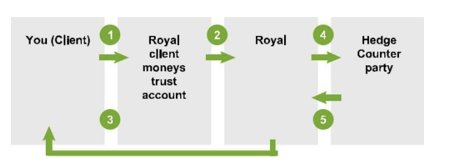
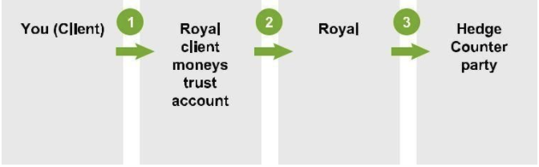
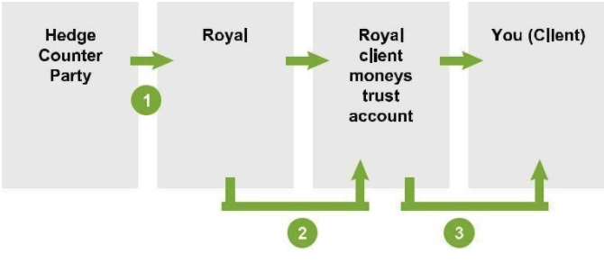
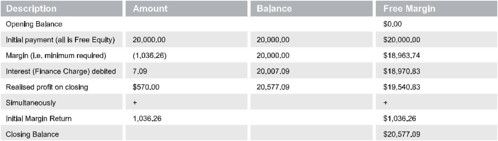
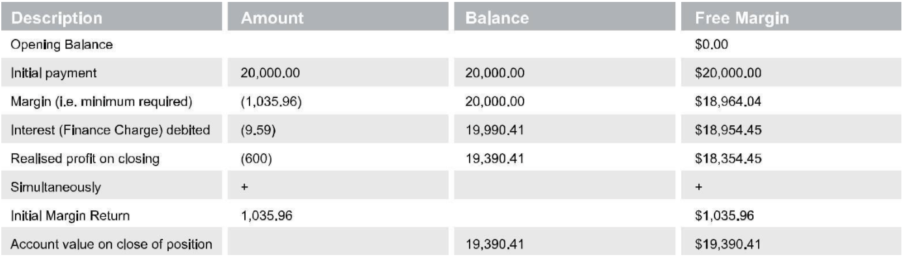
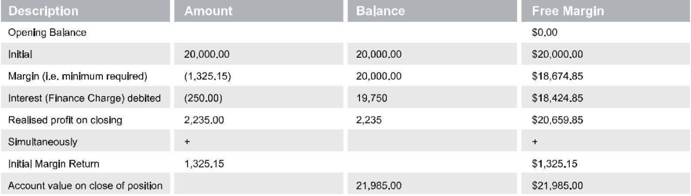
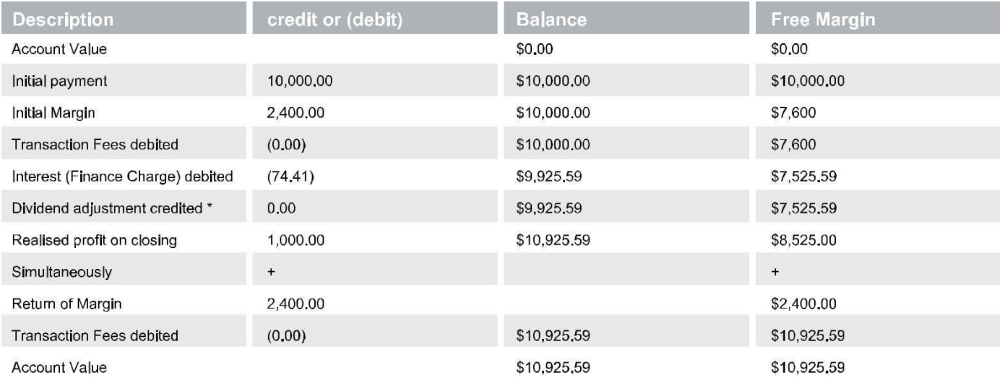
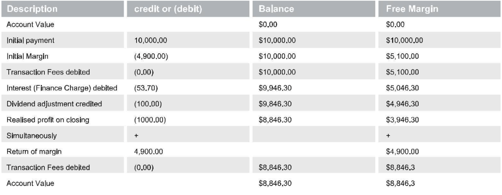
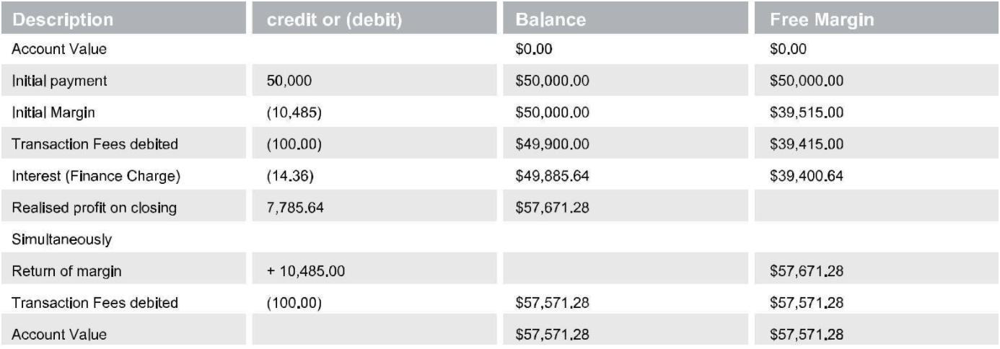
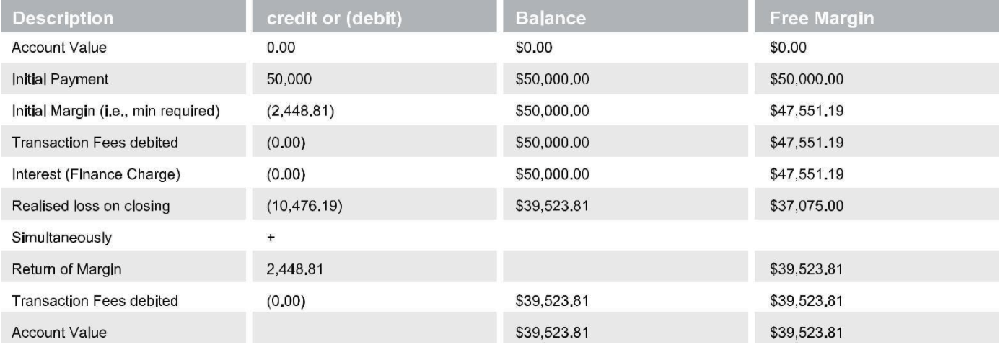

-
Getting Started
-
Start trading today
Our spreads start from 0.0* pips.
Start trading today Try free demo
Diverse liquidity providers ensure tight spreads 24/5 -
- Switch Markets
- Trading conditions
- Cost of trading
- Spreads
- Swap Rates
- Trading hours
-
- Range of markets
- Markets
- Forex
- Commodities
- Indices
- Digital Currencies
- Shares
-
Start trading today
-
Platform and Tools
-
Start trading today
Our spreads start from 0.0* pips.
Start trading today Try free demo
Diverse liquidity providers ensure tight spreads 24/5 -
- Platforms
- Download MT4
- Webtrader
- Social Trading
-
Start trading today
-
Offers
-
Start trading today
Our spreads start from 0.0* pips.
Start trading today Try free demo
Diverse liquidity providers ensure tight spreads 24/5
-
Start trading today
-
Company
-
Start trading today
Our spreads start from 0.0* pips.
Start trading today Try free demo
Diverse liquidity providers ensure tight spreads 24/5 -
- Company
- About us
- Why us
- Contact us
- Become an IB
- Blog
-
Start trading today
- Client Login
PRODUCT DISCLOSURE STATEMENT
Margin FX and Contract for Difference
- Important Information
- Key Information
- How to Trade
- Significant Risks
- Costs, Fees
and Charges - General Information
- Glossary
Switch Markets International PTE Ltd
UEN: 202040285G
CORPORATE AUTHORIZED REPRESENTATIVE
1B Trengganu St,
Singapore 058455 2100
PH: +44 1902 943 383
Prepared on 24 December 2020
SWITCH MARKETS INTERNATIONAL PTE LTD is an authorized representative of and issues products on behalf of the Authorizer, ROYAL ETP LLC. ROYAL ETP LLC will be the counterparty to all trades and your funds will be held in ROYAL’s segregated client trust account.
Section 1. - Important Information
1.1 This PDS
This Product Disclosure Statement (PDS) is dated 24 December 2020 and was prepared on that date by Switch Markets International PTE LTD UEN: 202040285G (‘Switch’). Switch is the authorized representative of Royal ETP LLC (149 LLC 2019) (‘Authorizer’). Switch issues the over-the-counter contracts (‘Contracts’) referred to in this PDS on behalf of the Authorizer. Switch makes a market and enters into Contracts on behalf of the Authorizer with you. The Authorizer will be the counterparty to all trades. Your funds will be held in the Authorizer’s segregated client trust account.
This PDS is designed to help you decide whether the contracts described in this PDS are appropriate for you. You may also use this PDS to compare this financial product with similar financial products offered by other issuers.
This PDS describes the key features of our Contracts, their benefits, risks, the costs and fees of trading in them and other related information. The Contracts are sophisticated financial products, so you should read this PDS and the Account Terms in full before making any decision to invest in them. We encourage you to seek independent financial advice prior to placing any trades. Switch does not provide personal advice.
The expressions used in this PDS have definitions given in the Glossary at the end of this PDS (see Section 7), or have a meaning given by law and regulation.
1.2 OTC Contracts
This PDS covers OTC contracts in respect of:
- shares (referred to as Share Contracts);
- indices (referred to as Index Contracts);
- commodities (referred to as Commodity Contracts);
- Foreign Exchange (referred to as FX Contracts);
- Bullion (referred to as Bullion Contracts); together, referred to as the ‘Contracts’.
The Contracts covered by this PDS are those traded on Switch’s Electronic Trading Platform (see section 3.7 for more). These Contracts are derivative products issued by Switch on behalf of the Authorizer and are not exchange-traded products.
1.3 Your Potential Liability
Please especially read the Key Information in Section 2 and the Significant Risks in Section 4 for important information about your potential liability. We recommend that you contact us if you have any questions arising from this PDS or the Account Terms prior to entering into any transactions with us. Switch recommends that you consult your advisor or obtain independent advice before trading.
1.4 Switch does not give Personal Advice
Switch will not give you personal financial advice. This PDS does not constitute a recommendation or opinion that the Contracts are appropriate for you, your financial situation, needs or objectives. Switch encourages all clients to seek independent financial advice as appropriate.
1.5 Your Suitability to Trade the Contracts
If we ask you for your personal information to assess your suitability to trade the Contracts and we accept your application to trade these contracts, this is not personal advice or any other advice to you. You must not rely on our assessment of your suitability since it is based on the information you provide, and the assessment is only for our purposes of deciding whether to open an Account for you. You may not later claim you are not responsible for your losses merely because we have opened an Account for you after assessing your suitability. You remain solely responsible for your own assessments of the features and risks and seeking your own advice on whether the Contracts are suitable for you.
We will assess wholesale client or retail client status from time to time. If you satisfy the criteria to be classified as a wholesale client, we may classify you as such. We are under no obligation to inform you if we classify you as a wholesale client.
1.6 Currency of PDS
The information in this PDS is up to date at the time it was prepared but is subject to change at any time. Any updates will be posted on our website www.switchmarkets.com/product-disclosure-statement. A copy of this PDS and the Account Terms can be downloaded from the website or you can call Switch to request that a paper copy be provided to you free of charge. If the new information is information which is materially adverse to you, we will issue either a new PDS or a supplementary PDS containing the new information. If the new information is not materially adverse to you, you will be able to find updated information on our website or by calling us using the contact details given below. If you ask us, we will send you without charge a paper copy of the information.
1.7 Contact
Switch can be contacted at
Unit 126, 117 Old Pittwater Road, Brookvale NSW 2100, Australia PH: +44 1902 943 383
The Authorizer can be contacted at:
Halifax Street, Kingstown,
St Vincent and the Grenadines
Telephone: +61 2 8284 5100
or by emailing them at support@switchmarkets.com
Section 2. - Key Information
2.1 Key Features of the Contracts
- The Contracts are over-the-counter derivatives issued by Switch on behalf of the Authorizer. They are not exchange- traded.
- The Authorizer acts as principal in all transactions Switch executes with you in respect of the financial products offered by us on behalf of the Authorizer.
- The Authorizer is counterparty to all trades.
- All deposits, fees and charges are payable to the Authorizer, who holds your funds in a segregated client trust account.
- The Contracts are for investing indirectly in a range of currency, gold or silver, securities and index movements around the world without having to own and pay full value of the Underlying Security or any underlying exchange traded contract in relation to the index.
- You must fund your Account before the Contracts are issued to you. You do this by paying at least the Initial Margin (plus other fees and charges detailed in Section 5).
- You remain liable to pay later Margins and to maintain the required amount of Margin. If you do not maintain the required Margin or you do not pay the required Margin call by the required time, the contract can be Closed Out and you remain liable to pay us any remaining shortfall.
- Unlike contracts traded on an exchange, the Contracts are not standardized. The terms of a contract are individually tailored to the requirements of the parties to the contract – you and the Authorizer.
- In the case of the Contracts, you have no right or obligation to acquire the Underlying Security itself. See the comparison table in this Section which outlines the key differences between the Contracts and dealing directly in the Underlying Security.
- There is leverage in the Contracts because you pay to the Licensee only Margin, not the full value of the Contract. All payments to the Authorizer are paid as Margin (or for the relevant fees and charges). The more Margin you pay, the less leverage.
2.2 Key Benefits of our Contracts
- The Contracts enable you to take a trading position with an exposure to a particular Underlying Security without needing to buy or sell the actual Underlying Security.
- You can use the Contracts for speculation, with a view to profiting from market fluctuations in the Underlying Security.
- You may take a view of a particular Underlying Security and so invest in the Contracts intending to make a profit.
- You can use the Contracts to hedge your existing exposure to an Underlying Security.
- You can deal in the Contracts with a view to profiting in both rising and falling markets.
- The Contracts may involve a high degree of leverage.
Our contracts potentially let you invest a relatively small amount (in the form of the Initial Margin) to have an exposure to the Underlying Security without having to pay the full price of the Underlying Security. This leverage gives you the potential to take a greater level of risk for a smaller initial outlay, so this increases the potential risks and rewards. Leverage can magnify losses (see Section 4 – Significant Risks and, in particular, the paragraph “Loss from Leverage”).
- Your monies paid to the Licensee’s client monies trust account as Margin may be immediately withdrawn and paid to the Licensee.
2.3 Key Risks of our Contracts
The key risks of investing in the Contracts are outlined below. Please see Section 4 for further information in the description of the significant risks.
- Leverage – the Contracts are leveraged when the amount you pay (i.e., the total Margin and fees and charges) to the Authorizer is less than the full face-value of the underlying investment.
- The Contracts are typically a low margin, high leverage investment – you should be prepared for greater risks from this kind of leveraged derivative, including being liable to pay the Authorizer more Margin and those Margin requirements changing rapidly in response to changes in the market for the Underlying Security.
- Loss of your monies – Your potential losses on (long or short) the Contracts may exceed the amounts you initially pay (as Margin) for the Contract or amounts the Authorizer holds on trust for you.
- Unlimited loss – Your potential loss on positions may be unlimited – more than the amount you pay the Authorizer for the position.
- Trust monies may be withdrawn to pay for the Contracts – The money which you pay into the Authorizer’s client monies trust account may not be kept there and to the extent permitted by law, can be withdrawn for the purposes of paying the Authorizer’s margin, fees, costs and charges, its Hedge Counterparties or other entitlements under this agreement and the PDS. Retail and sophisticated investor funds are not used to margin, guarantee, secure, transfer, adjust or settle dealings in derivatives by the Authorizer or on behalf of people other than the client.
- Margin requirements – You are liable to pay Margin before the Contract is issued and you may be required to pay more Margin before the Contract is Closed Out. Margin requirements can change rapidly. If you do not meet Margin requirements, including at little or no notice, all or a portion of your Contract position may be Closed Out without notice to you and the positions are usually (but need not be) liquidated on a first in/first out (FIFO) basis.
- Foreign Exchange - the Contracts which are denominated in foreign currency can expose you to fast and large changes to the value of your Account, potentially triggering the need for more Margin to be paid by you, including at short or no notice.
- Counterparty risk - you have the risk that the Authorizer will not meet its obligations to you under the Contract. The Contracts are not Exchange-traded so you need to consider the credit and performance risk you have on the Authorizer. This is further explained in Section 3 under “Your Counterparty Risk on the Authorizer”.
2.4 Your Suitability
We may make an initial assessment of your suitability to invest in the Contracts based on the information you give us through Switch’s client on-boarding and ongoing due diligence. You should always make your own assessment of your suitability to trade the Contracts, and seek your own independent financial and legal advice before making any decisions. You should carefully consider the features of the Contracts and their significant risks before investing in them.
Some key suitability considerations for you are:
- whether you have experience in trading in the Underlying Security;
- whether you understand the terms of the Contracts and how they work;
- whether you accept a high degree of risk in trading in these contracts;
- whether you can monitor your investments and manage them in a volatile market;
- whether you have financial resources to provide more Margin, especially on little or no notice; and
- whether you can bear substantial losses that might arise from trading in these contracts, especially the potential for unlimited losses.
Our assessment of your suitability is based on your information and any other information we ask and you give us.
To the extent permitted by law we do not accept liability for your choice to invest in any the Contracts, so you should read all of this PDS carefully, consider your own needs and objectives for investing in the Contracts and take independent advice as you see fit.
2.5 Nature of the Contracts
The Contracts are sophisticated over-the-counter financial products which allow you to make a profit or loss from changes in the market price of the Underlying Security (or, if that is an index, changes in the index level), without actually owning the Underlying Security or having any direct interest in the Underlying Security. In simple terms, the amount of profit or loss made on the Contract will be equal to the difference between the price of the Contract when the Contract is opened and the price when the Contract is closed, multiplied by the number of the Contracts held.
The calculation of profit or loss is also affected by other payments, including payments relating to Transaction Fees, Finance Charges and any other charges (for more information, see Section 5).
The value can also be affected by fluctuations in foreign exchange if you effect a Transaction denominated in a currency different from the denomination of your Account currency.
You can take both “long” and “short” positions. If you take a long position, you profit from a rise in the Underlying Security, and you lose if the price of the Underlying Security falls. Conversely, if you take a short position, you profit from a fall in the price of the Underlying Security and lose if the underlying price or level rises.
You can also deal in the Contracts on many indices in respect of leading Exchanges. Go short if you think the market index is going to fall or go long if you think the index is going to rise. This can be useful if you want to follow a specific market trend rather than individual shares.
Unlike direct investments made by trading on an Exchange, the Contracts are not standardized. The terms of the Contracts are based on the Account Terms with Switch, which apply to your Account and your Transactions.
The Contracts do not give you any beneficial interest in the Underlying Security nor any right to acquire the Underlying Security. You have none of the rights of a holder of that financial product. This is different from direct trading in the Underlying Security where you acquire a beneficial interest in the actual financial product.
2.6 Types of Contracts
2.6.1 Share Contracts
Share Contracts allow you to receive many of the economic benefits of owning the Underlying Security on which the Contract is based without physically owning it (for more information on key benefits of trading in the Contracts, see Section 2). For more information on which Share Contracts Switch provides quotes on, please download a demonstration trading platform located on our website or contact Switch.
Share Contracts are valued based in part, on the price of the Underlying Security.
Share Contracts derive their price from many factors, including but not limited to:
- Market volatility;
- Market depth;
- Volatility of Underlying Security; and
- News events.
Prices are only quoted for Share Contracts and can only be traded during the open market hours of the relevant exchange on which the Underlying Security is traded.
Open hours of the relevant exchanges are available by viewing the relevant Exchange website. In addition, Switch will not quote for a Contract on a particular Underlying Security if that Underlying Security is illiquid or is in suspension (for more information on potential external disruptions see Section 4). Switch will not quote Share Contracts if the contract is over shares in a company which becomes externally administered.
For example, if you bought 1000 Share Contracts and the price of the Underlying Security was quoted as 15.70/15.71 then the Share Contract would have a value of $15,710 (being 15.71 x 1000).
Refer to the Section 3.12 under “Rolling over or swapping” for more details and for the relating fees and charges refer to Section 5 under “Finance Charge Adjustment/ Finance Credit Adjustment”.
2.6.2 Index Contracts
Index Contracts allow you to trade anticipated market trends rather than individual shares. Margin requirements for Index Contracts may differ and may be lower than other types of Contracts.
Index Contracts are valued based on the number of units per index point of the underlying index. For example, if the S&P™/ ASX 200™ is valued at $4,600 then trading 10 Index Contracts would mean the face value of the trade was
$46,000. Index Contracts derive their price or value from the real time changes in the value of an underlying index as calculated by the relevant exchange or Switch’s valuation. Similar to Share Contracts, Index Contracts prices are only quoted and can only be traded during the open market hours of the relevant exchange on which the underlying index is determined (or within any more limited hours set from time to time by the Licensee). Open hours of the relevant exchanges are available by viewing the relevant exchange website. Refer to Section 3.12 under “Rolling over or swapping” for more details and for the relating fees and charges refer to Section 5 under “Finance Charge Adjustment/ Finance Credit Adjustment”.
2.6.3 Commodity Contracts
Commodity Contracts operate in the same way as Share Contracts and Index Contracts except their Underlying Security is the value or price of a Commodity Transaction. Commodity Contracts are an easy way to gain access indirectly to commodity markets and underlying commodities such as oil and gas. Commodity Contracts give traders and investors indirect exposure to the underlying commodity without physical delivery. Commodity Contracts may be based on Underlying Futures contracts which have set expiry dates or settlement terms. However, Commodity Contracts cannot be settled by the physical or deliverable settlement of the underlying commodity. Rather these products can be rolled or swapped indefinitely until you decide to close out the transaction.
Refer to Section 3.12 under “Rolling over or swapping” for more details and for the relating fees and charges refer to Section 5 under “Finance Charge Adjustment/ Finance Credit Adjustment.
2.6.4 FX Contracts
FX Contracts are leveraged products which derive their prices from the real time changes in the price of the Underlying Security. Prices are only quoted for FX Contracts and can only be traded during the open market hours on which the Underlying Security is traded.
Open hours of the market are available by viewing the relevant FX market website. FX Contracts allow you to receive many of the economic benefits of owning the full value of the Underlying Security on which the FX Contract is based without physically owning it (for more information on key benefits of trading in FX Contracts see Section 2.2). For more information on what Switch provides quotes on, please download a demonstration trading platform located on Switch’s website or contact Switch directly.
FX Contracts are valued based on the price of the Underlying Security. For example, if you bought 100,000 units of one currency against another and the price of the Underlying Security was quoted as 1.25505/1.25525 then the FX Contract would have a value of $125,525 (being 1.25525 x 100,000).
2.6.5 Forward FX contracts
Forward FX contracts are particular kinds of FX Contracts, which derive their price or value from the real time changes in the value of a currency for settlement in the future as calculated by Switch.
Similar to FX Contracts, prices are only quoted by Switch and can only be traded during the open market hours (or within any more limited hours set from time to time by Switch).
2.6.6 Bullion Contracts
Bullion Contracts are very similar to FX Contracts in that they are an over-the-counter financial product which allow you to make a profit or loss from changes in the market price of an Underlying Security, in this case gold or silver, to the extent they are reflected in price movements in Bullion Contracts without having to own the Underlying Security. Bullion Contracts cannot be settled by physical delivery on their Value Date, rather these products can be rolled or swapped indefinitely until you decide to Close Out the Transaction i.e. Bullion Contracts do not have set expiry dates and will remain open until Closed Out. Refer to Section 3.12 under “Rolling over or swapping” for more details and for the relating fees and charges refer to Section 5 under “Finance Charge Adjustment/ Finance Credit Adjustment”.
2.7 Comparison
This summary table compares the Contracts offered by this PDS with direct investments in shares. As a summary, it cannot cover all features, risks and terms of all the financial products and services.
| Feature | Direct investments in shares | Contracts |
| Beneficial interest in Underlying Security | Investor has beneficial interest | Holder of Contracts has no beneficial interest in Underlying Security. |
| Dividends and distributions | Investor has entitlement to available dividends and distributions, typically paid some days after the ex-date for the Underlying Security. | Holder has no right to dividends or distributions, though adjustments are made to the Account in respect of the gross cash value of the dividends. See Section 3.9. |
| Dividend imputation credits | Investor has entitlement to available dividend imputation credits. | Holder has no right to dividend imputation credits or the value of them. |
| Shareholder benefits (e.g. voting, participation in corporate actions, receiving company reports or purchase plans or shareholder discounts). | Investor has entitlements (subject to custodian’s rules) and must manage responses to them. | Holder has no right to shareholder benefits or purchase plans or to direct Switch to act in respect of them. Switch may make adjustments in its discretion to Contracts to reflect corporate actions (See Section 3.10). |
| Rights as a Client of an Exchange-regulated broker. | Investor has rights imposed by the operating rules of Exchange and any other regulatory rules (such as ASIC/ASX Market Integrity Rules). | Investor has no rights under Exchange rules; all rights come from Contracts. |
| Pricing changes | The price of an Exchange-traded share changes according to market. | The price of Switch’s Contracts changes according to a range of variables, including the market price of the Underlying Security (except in the cases of market disruption). |
| Leverage | No leverage. | Leveraged by way of the Investor paying Margin which is less than 100% of the cost of directly buying and holding the Underlying Security. |
| Further Margining | No Margining. | Further Margining occurs. |
| Short Positions | Direct investments are long positions. Short positions may be possible with separate orders where the long position has been closed. | Short Contracts are possible, depending on availability and regulations. |
| Custody | Shares are held in custody according to Investor’s wishes (could be directly held or indirectly held by a nominee). | Holder has direct ownership of the Contracts; but no interest in Underlying Securities or in any monies paid to the Authorizer. Margin remains in Authorizer’s client trust account. |
| Recourse | No need for recourse other than to cover the risk of a custodian default or broker fraud. Investor has benefit of any exchange guarantee fund, depending on rules for that fund. | Holder has benefit of Margin retained in Authorizer’s client monies trust account but otherwise is an unsecured creditor of the Authorizer (see Section 3). |
| Trading | As permitted by Broker. | According to the Authorizer’s Electronic Trading Platform. |
| Finance Charges | None. | Imposed on value of Contract’s position (see Section 5). |
Section 3 – How to Trade
3.1 Your Account
You need to establish your Account by completing Switch’s Account application form, which will be made available for you online or by contacting Switch directly. After Switch accepts your application, your Account will be established. Your Account covers all of the services and products which you apply for in your application form and which is accepted by Switch. Your trading in the Contracts is within your Account which is for your trading on the trading platform known as Switch’s Electronic Trading Platform. By opening an Account, you agree to the Account Terms. The legal terms governing your Account and your dealing in the Contracts are set out in the Account Terms. The Account Terms also have the legal terms for your dealings with us for other financial products which are not covered by this PDS.
3.2 Opening a Contract
The particular terms of each contract are agreed between you and Switch before entering into the Transaction. Before you enter into a contract, Switch will require you to have sufficient Account Value (see the Glossary in Section 7) to satisfy the Initial Margin requirements for the relevant number of contracts. The payments you make to the Authorizer in a segregated client trust account, are either held as Margin or withdrawn to pay the fees and charges which you owe.
The fees and charges of transacting with Switch are described in Section 5 of this PDS. A position is opened by buying a Contract, corresponding with either buying (going long) or selling (going short) the Underlying Security. You go “long” when you buy a contract corresponding with buying the Underlying Security in the expectation that the price of the Underlying Security to which the contract is referable will increase, which would have the effect that the price of the contract to Close Out would increase.
You go “short” when you sell a contract corresponding with selling the Underlying Security in the expectation that the price of the Underlying Security to which the contract is referable will decrease, which would have the effect that the price of the contract will decline.
When you Close Out a position, you are entering into a new position opposite to your Open Position. You are liable for the costs, fees and charges as described in this PDS (see Section 5). You should be aware that your investment might suffer a loss, depending on the value of your contract at termination compared with the total cost of your investment up to the time of termination.
3.3 Closing a Contract
Most of the Contracts do not have an expiry date. They remain open until they are Closed Out. With most of the Contracts you can hold the position for as long as you like. This may be for less than a day, or for months. Commodity Contracts and Index Contracts whose Underlying Security is a Futures Contract will have an expiry date.
All Contracts whose Underlying Security is a Futures Contract will expire at a specified date in the expiry month for them. These Contract positions need to be closed or rolled into the next available contract month by the Client since Switch does not support the automatic rolling of these Contract Open Positions.
Please take note of and monitor the expiry and first notice dates of any Futures Contracts which are the underlying Futures Contract of the Commodity Contracts which you invest in and ensure that you have Closed Out your Contract position before the Contract’s expiry date, otherwise it will be Closed Out.
If you do not close a Contract position before the Contract’s expiry date which generally is always two days prior to the underlying Futures Contract expiry date or notice date (whichever is first), Switch will normally automatically Close Out your Commodity Contract position for you at the first opportunity available to Switch at the prevailing market price. Any resulting costs, gains or losses will be passed on to you. If you wish to close the Contract’s position before it expires, you enter into a Contract which is equal and opposite of the open Contract. To close a ‘bought’ or ‘long’ Contract you sell, and to close a ‘short’ or ‘sold’ Contract you buy. To implement this, you contact Switch, either directly or via the online trading platform, to determine the current market value of the Underlying Security for the Contracts, with the view to closing the Contracts position (or part of it). Switch will confirm the current market value and you will then decide whether to accept the value, and if so, you would instruct Switch to Close Out your Open Position in accordance with your instructions.
At the time that the Contracts are closed, Switch will calculate the remaining payment rights and obligations to reflect movements in the Contract Value since the previous business close (including other credits/debits). Because you enter into the Contracts to Close Out the existing Contracts, there may be a Transaction Fee on the Contracts, used to close the position – see Section 5 on “Costs, Fees and Charges”.
Switch has discretion in determining closing prices. In general, without limiting Switch’s discretion, it should be expected that Switch will act reasonably and have regard to a range of relevant factors at the time, such as the value of the hedge contract taken by the Authorizer to hedge the Contracts issued by Switch to you on the Authorizer’s behalf, the closing price of the Underlying Security for the Contracts, any foreign currency exchange rates which are relevant due to the denomination of the Contracts or Accounts and any suspension or halt in trading of the Underlying Security. In the worst case, it is possible that the closing price determined by Switch may be zero. Switch also has the right to decide to make an adjustment in any circumstance if Switch considers an adjustment is appropriate (for example in the event of a corporate action). Switch has a discretion to determine the extent of the adjustment so as to place the parties substantially in the same economic position they would have been in had the adjustment event not occurred. Switch may elect to close a position (without prior notice to you) if an adjustment event occurs and it determines that it is not reasonably practicable to make an adjustment.
Although there are no specific limits on Switch’s discretions, Switch is subject to its corporate authorized representative agreement with the Authorizer. The amount of any profit or loss you make on the Contracts will be based on the difference between the amount paid for the Contract when it is issued (including fees and charges) and the amount credited to your Account when the Contract is Closed Out (including allowance for any fees and charges).
3.4 Dealing
Quotes for prices for dealing in the products we offer on behalf of the Authorizer are indicative only and so are subject to the actual price at the time of execution of your Transaction. There is no assurance that the position will actually be dealt with at the indicative quote. Quotes can only be given, and Transactions made, during the open market hours of the relevant Market/Exchange on which the Underlying Securities are traded. The open hours of the relevant Markets/Exchanges are available by viewing the relevant Exchange website or by contacting Switch. Switch may at any time in its discretion without prior notice impose limits on the products we offer on behalf of the Authorizer in respect of particular Underlying Securities. Ordinarily, Switch would only do this if the market for the particular Underlying Security has become illiquid or its trading status has been suspended or there is some significant disruption to the markets, including trading facilities. You should be aware that the market prices and other market data which you view through the Authorizer ’s online trading platforms or other facilities which you arrange yourself may not be current or may not exactly correspond with the prices for the products offered or dealt by Switch on behalf of the Authorizer.
If you access your Accounts and any online trading platform outside of the hours when Orders may be accepted, you should be aware that the Orders may be processed at a later time when the relevant Market/Exchange is open to trading, by which time the market prices (and currency exchange values) might have changed significantly.
3.5 Pricing - Bid/Ask Spread
Switch quotes a lower price and a higher price at which you can place your Order. This may be referred to as the Bid/Ask spread. The higher quoted price is the indication of the price you can buy the Contract at. The lower quoted price is the indication of the price at which you can sell the Contract at. Switch’s Bid/Ask prices are set by Switch and so these prices may not be the same as those quoted in the relevant underlying market. Switch aims to give competitive pricing but please be aware that the quotes offered may not be the best price. When your Order is executed, for you to break even or realize a profit, putting aside for the sake of simple illustration any fees or charges, the price at which you exit your position needs to be at least equal to the original Bid or Ask price that you started the position (depending on whether you went long or short); if you trade at the Ask, the price needs to reach the Bid and vice versa. Also, the available pricing may be limited by minimum steps, depending on the Exchange rules for trading the Underlying Security or its hedge, so, depending on the product you choose, your Order to exit your position might have to be in minimum increments of pricing before it can be accepted and executed.
3.6 Pricing model
You may only trade in and out of the Contracts by using Switch’s prices. Switch offers prices based on a modified market making pricing model where the price available to Switch is derived from the Authorizer’s Hedge Counterparty. The Authorizer might make hedge contracts at or around the same time as Switch issues the Contracts to you by making a corresponding hedge contract with its Hedge Counterparty (not by placing orders directly into the market).
Switch understands that the Authorizer’s Hedge Counterparty usually takes the other side of the transaction and so the Authorizer’s Hedge Counterparty may choose not to place its hedge contacts directly in the market or it might hedge directly into the market, without the Authorizer being aware of the Hedge Counterparty’s choice.
Switch’s Bid and Ask prices to you are based on the corresponding prices offered by the Hedge Counterparty to the Authorizer, which generally are derived from the underlying markets (but are not limited to that). Generally, the prices of the Contracts are set on Switch’s Electronic Trading Platform to give competitive pricing, but you should be aware that Switch is responsible for setting the prices of opening and closing the Contracts and Switch does not guarantee to find you the best prices.
3.7 Switch’s Electronic Trading Platform
Your Account gives you access to Switch’s Electronic Trading Platform, which is a multi-product multi-currency online trading platform.
Most of the Contracts will use Switch’s Electronic Trading Platform. Even if you telephone Switch to place an Order, your Order will be placed using Switch’s Electronic Trading Platform.
You must carefully read and follow the operational rules for the online trading platform. The online trading platform may impose special operating rules regarding:
- posting Margin (such as when payment is effective);
- how Margins are calculated (such as automatic adjustments outside of trading hours, including at the weekend); or
- how Orders are managed.
We recommend that prior to engaging in live trading you open a “demo” account and conduct simulated trading. This enables you to become familiar with Switch’s Electronic Trading Platform attributes. There is also online help available.
Switch’s Electronic Trading Platform has a wealth of information relating to its operation.
3.8 Confirmations of Transactions
If you transact in our Contracts, the confirmation of that Transaction, may be obtained by accessing the daily statement online, which you can print. Once you have entered an Order into an online trading platform, the system may report the main features of your Transaction in a “pop-up” window. This is a preliminary notification for your convenience and is not designed to be a confirmation. If you have provided Switch with an e-mail or other electronic address, you consent to confirmations being sent electronically, including by way of the information posted to your Account in the online trading platform. It is your obligation to review the confirmation immediately to ensure its accuracy and to report any discrepancies within 48 hours.
3.9 Share Contracts – Dividends
If you hold a long Contract, you will be credited with an amount equal to the cash dividend on the relevant number of the Contracts’ Underlying Securities as soon as practical, typically on the business day after the ex-dividend date (the Contracts do not confer rights to any dividend imputation credits). Please be aware that delays might occur for reasons outside of the Authorizer’s control, including delays by the issuer which is paying the dividend, time zones or banking payment systems.
Conversely, if you hold a short Contract, your Account will be debited an amount equal to the cash dividend on the Underlying Securities on the ex-dividend date and may be debited any imputation credits of the Underlying Security.
The dividend and cash adjustments reports given by Switch record the adjustments made to your Contracts for dividends or other corporate actions affecting the Underlying Securities (they do not refer to actual dividends paid by the issuer of the Underlying Security).
If the Contracts relate to an index and then a share that is a constituent of the index goes ex-dividend, then an adjustment may be made to the index level to reflect this dividend. An amount for the weighted proportion of the dividend will be credited to your Account in respect of your long positions and debited from short positions.
3.10 Share Contracts – Corporate Actions
If there is a corporate action by the company which issues the Contracts’ Underlying Security to which the Contracts relates, Switch may in its discretion make an adjustment to the terms of the Contracts in accordance with the terms of the Account. For example, an adjustment will ordinarily be made for: subdivisions; consolidations; reclassifications of shares; bonus issues; other issues of shares for no consideration; rights issues; buy backs; in specie distributions; takeovers, schemes of arrangement or similar corporate actions; a corporate action event that has a dilutive or concentrative effect on the market value of the shares. You may not direct Switch how to act on a corporate action or other shareholder benefit. Switch has a discretion to determine the extent of the adjustment and aims to place the parties substantially in the same economic position they would have been in had the adjustment event not occurred.
Switch may elect to close a position (without prior notice to you) if an adjustment event occurs and it determines that it is not reasonably practicable to make an adjustment. Switch may also elect to close a Contract if the Contract’s Underlying Securities are the subject of a take-over offer, scheme of arrangement or other mechanism for change in control, prior to the closing date of the offer. The Contracts do not entitle you to direct Switch on how to exercise any voting rights in connection with the Contract’s Underlying Security such as shares.
Clients should be aware that some Exchanges purge orders in securities that undergo corporate actions. You should seek confirmation from Switch of any action for specific corporate actions that might affect your Contracts.
3.11 Share Contracts – No Shareholder Benefits
If the Contract relates to an Underlying Security which is an Exchange-traded security, you do not have rights to vote, attend meetings or receive the issuer’s reports, nor can you direct Switch to act on those rights. Other benefits such as participation in shareholder purchase plans or discounts are unavailable.
3.12 Share Contracts and Index Contracts – Rolling over or Swapping
Some Index Contracts and Commodity Contracts are not automatically ‘rolled over’’ to a new value date and are closed out by Switch according to the standard terms of the Underlying Security which may be an Exchange Traded Futures Contract.
Alternatively, some open Contracts are never allowed to reach their Value Date but instead are ‘rolled over’ to a new Value Date. Open Positions held at the end of a trading day at 17:00 New York local time (GMT-5) will be rolled over to a new Value Date on a spot basis being TOM/NEXT rollover basis (i.e. rolled from tomorrow to the next day) immediately after the change of the trading day. For example, a position opened on Monday which is still open on Tuesday will be automatically Closed Out then reopened again immediately with the new Value Date of Thursday.
This will ensure that if a Closed Out Spot Commodity Contract is entered into, the Value Date of the Close Out Spot Commodity Contract has the same Value Date as the rolled Spot Commodity Contract so the position can be matched and Closed Out on the Value Date.
The rollover (or swap) points is reflected in the price at which the Open Position is rolled forward i.e. it is added to or deducted from the original traded rate and debited or credited to your Account balance on Value Date (and so is not an additional fee or charge).
When a position is rolled over to a new Value Date, any unrealized profit or loss on the position being rolled is also subject to a Finance Charge credit or debit on the profit or loss. This finance charge or finance credit is included in the rollover/swap points. Details of the rollover (or swap) pricing are included in your rollover history statement. This is an online report that you can access and print upon demand and can be accessed via the Electronic Trading Platform.
You should see the Trading Conditions for roll-over or swap depending on the Electronic Trading Platform you have chosen and the Underlying Security.
3.13 Payments and Client Monies
Here is an explanation of payments when you invest in our Contracts.
A. Establishing a Position
Client funds are to be paid to the Authorizer. Before you transfer any money to the Authorizer, you should carefully consider how your money will be held and used and the risks to you of paying money to the Authorizer. This is a simplified diagram and outline of steps of flows of payment for establishing a position in a Contract. Please note that a reference to ‘Royal’ in this diagram is also a reference to the ‘Authorizer’. Please see the entire description which follows.

Steps:
Step 1 You (as our Client) pay money to the Authorizer, which is then held in a segregated client monies trust account by the Authorizer for Margin, fees, charges and costs. You need to do this to fund your Account before trading.
Step 2 The Authorizer’s general policy is that the Authorizer may immediately withdraw from the client monies trust account all of your money which you had deposited there, on your direction and in accordance with the Account Terms, from the client monies trust account to pay as Margin to the Authorizer for your Contracts (including for any other fees or charges or other payments which you owe, according to your Account Terms or for other amounts for your Account). This will allow for your Account to be credited in order for you to trade in the Contracts.
Step 3 the Contracts are issued to you.
Step 4 The Authorizer may then separately, using its other funds or certain client funds to pay the Hedge Counterparty to enter into a hedge transaction against the Authorizer ’s exposure to your trade. Steps 3 and 4 are virtually simultaneous.
Step 5 If the Licensee hedges some or all of the Client's Contracts with Hedge Counterparty, then step 5 shows the hedge contracts held by the Authorizer for its own account. In certain instances, the Authorizer may not hedge. This may include where another customer enters into a trade which is opposite to the trade you enter. The Authorizer may not hedge where in the reasonable opinion of the Authorizer, having regard to various factors, it is satisfied that hedging is not required.
1. The Authorizer withdraws monies from the client monies trust account only for:
- holding margin;
- paying Clients;
- paying Switch;
- amounts, fees and charges due to the Authorizer or Switch on the Contracts or other products you choose to trade in; or
- to pay the Hedge Counterparty for managing the Authorizer’s Margin obligations on the hedge contracts for those Clients.
2. You do not satisfy your payment obligations to Switch merely by having your monies in the Authorizer client monies trust account.
For so long as your money’s remain in the Authorizer’s client monies trust account, they are held in trust for you and, pursuant to the Account Terms, cannot be counted as payment for or credit for your Account (unless the Authorizer chooses to waive this) until the Authorizer acts on the direction given by you (each time you deposits funds into the Authorizer’s client monies trust account) to withdraw the funds from the Authorizer’s client monies trust account.
However, the Authorizer’s general policy is to make the withdrawals from the client monies trust account in the ordinary course of business to allow you to trade.
Switch may choose to credit your Account with payment before the Authorizer withdraws the funds you have paid from the Authorizer’s client monies trust account. This may be done as an advantage to Clients to facilitate dealing in the Contracts having regard to available banking payment procedures, but if that is done, it should not be expected or be relied upon as always going to be done by Switch. However, as explained earlier in this PDS, it is the general policy of Switch to credit your Account once the Authorizer has received cleared funds in the segregated client account.
Detailed Explanation of Client Monies when Establishing a Position
Before you transfer any money to the Authorizer, you should carefully consider how your money will be held and used and the risks to you of paying money to the Authorizer.
The Licensee’s Client Monies Trust Account
Monies paid by you to the Authorizer for the Contracts are initially deposited into a trust account maintained by the Authorizer which is referred to in this PDS as the “Authorizer’s client monies trust account”.
The monies paid by you into the Authorizer’s client monies trust account are held for you and are segregated from Authorizer’s own funds. This means those funds are not available to pay general creditors in the event of receivership or liquidation of Authorizer (subject to the decision or ruling of a court of law or tribunal).
You should be aware that, generally, for trust accounts such as the Authorizer’s client monies trust account individual Clients do not have separate or segregated accounts and all Clients’ monies are combined into one account. This increases the risk that, should there be a deficiency in the account, you may not receive your full share of monies.
Monies and other assets in the trust account (e.g., the Authorizer’s client monies trust account) which belong to non- defaulting Clients are potentially at risk of being withdrawn and not being re-paid to the Client even though they did not cause the default. This is because the Authorizer is permitted by law to use certain monies to pay itself for its hedge of the Client’s position (i.e., the contract) (see “Your Counterparty Risk on the Authorizer” in Section 3) or to meet obligations incurred by the Authorizer in connection with margining, guaranteeing, securing, transferring, adjusting or settling dealings in derivatives.
The Authorizer is entitled to retain all interest earned on the money held in the Authorizer ’s client monies trust account. You make your deposit by using the unique client reference number we give to you for your Account.
This deposit also serves as confirmation of your direction to us to tell the Authorizer that these monies should be withdrawn as payment for which they are entitled for any contract you wish to enter into using Switch’s Electronic Trading Platform (not just the Contracts). If you do not use the client reference number when making your deposit, the Authorizer may ask you to confirm your direction before the Authorizer can credit your Account to enable you to enter into a Transaction.
In practical terms, when you make a payment which is deposited into the Authorizer’s client monies trust account, you are making payments which will be withdrawn to be used only for the fees and charges in respect of your Contracts (or other OTC Transaction) and the balance that is withdrawn will be used as Margin, being part payment for your Contracts (or other OTC Transaction) (because you take the benefit of the leverage from the Authorizer only requiring an amount of Margin which is less than the full risk-free value of the Contracts or other OTC Transaction).
Use of Client Monies
Pursuant to our Account Terms, you cannot make a payment into the Authorizer’s client monies trust account without also directing that all of those funds may be withdrawn to pay Authorizer amounts to which it is entitled. Therefore, you should only pay into the Authorizer’s client monies trust account the amount which you are prepared to have withdrawn to pay the Authorizer.
Client monies are held in the Authorizer’s client monies trust account until the Authorizer carries out the Client’s direction to withdraw the funds. The timing of the funds being held in the Authorizer’s client monies trust account might be for a short time, as little as the same day as your deposit, depending on whether the payment has been correctly referenced with the unique client reference number we give to you when you make your deposit or subsequently allocated manually.
Your monies are withdrawn from the Authorizer’s client monies trust account because you direct those payments in order for your Contracts (or other OTC Transaction) to be issued and to pay for your Contracts trading (or other trading on your Account). You make those directions through Switch by your Account Terms and the directions are made each time you make a deposit into the Authorizer’s client monies trust account by using the unique client reference number we give to you. Your monies have to be withdrawn from the Authorizer’s client monies trust account to pay Authorizer for the Contracts.
Switch’s general policy is that it will credit your Account with your deposit once it has confirmed the Authorizer has received cleared funds in its client trust account. The Authorizer may immediately withdraw from the Authorizer’s client monies trust account all of the funds you deposit for your Account, even if it is more than the required minimum Margin. If it is not withdrawn from the Authorizer’s client monies trust account, then, pursuant to the Account Terms, the credit may not be posted to your Account for that amount remaining in the Authorizer’s client monies trust account and so you cannot trade with the benefit of credit for that amount (unless Switch exercises its discretion, as explained below).
Switch may, in its discretion, choose to credit your Account before the Authorizer withdraws your money from the Authorizer’s client monies trust account. This may be done as an advantage to Clients to facilitate dealing in the Contracts (or other trading on your Account) having regard to available banking payment procedures, but if that is done by Switch it should not be expected or relied upon as always going to be done by Switch.
You are free to decide that it is more prudent for you to pay more than the required minimum Margin in respect of the Contracts to reduce your risks from leveraging or to avoid any future time limits for meeting later Margin requirements that you cannot meet. Also, you need to pay the Authorizer before you trade: you cannot open any new positions unless and until your Account has enough credit.
Your Account Terms and your directions give the Authorizer its entitlement to withdraw your funds from the Authorizer client monies trust account to pay itself all of the funds you deposit.
So, all of the funds withdrawn by the Authorizer from the Authorizer client monies trust account are payments for your Contracts and the amount paid to the Authorizer is credited to your Account (not held on deposit for you). This general power to immediately withdraw all of your funds will not apply if you have given other written instructions, such as to credit other specific Accounts you have with Authorizer.
Withdrawal Authority
Margin is part payment by you to the Authorizer for the Contracts and is not held on deposit for you. You must pay Margin to the Authorizer for the Contracts. You must pay Margin in an amount of at least the minimum required Margin amount, though you can choose to pay more than the required minimum amount (and it may be prudent for you to do so).
Since you must pay Margin for the Contracts and you control when you place Orders, the Authorizer requires that all of your monies for payment for your Contracts must first be deposited into the Authorizer client monies trust account and then all of it be withdrawn to pay the Authorizer to credit your Account. The Authorizer only accepts your payment into the Authorizer client monies trust account on the basis that it is authorized and directed by you to withdraw all of those funds to pay the Licensee from your Account, even if it is before you have traded any Contracts or, after you have traded, you have paid more Margin than the minimum required Margin. Your acceptance of the Account Terms and your payment to the Authorizer client monies trust account serves as confirmation of your direction through Switch, to the Authorizer to withdraw all of your funds.
Consequences of Withdrawals from the Authorizer Client Monies Trust Account
Monies are withdrawn from the client monies trust account either to pay the Authorizer or Switch (being monies to which we are entitled) or to pay you.
When monies are withdrawn to pay the Authorizer or Switch, they are, from the time of withdrawal from the Authorizer client monies trust account, the Authorizer’s own monies (and are not held for you). The Authorizer may then pass on that payment to Switch.
The Authorizer (like any other Authorizer with a similar trust account) is permitted to use certain client funds in the Authorizer client monies trust account for meeting margin and settlement obligations of any other Client’s derivatives and to pay the Authorizer monies to which it is entitled.
You should be aware that as from the time of withdrawal from the Authorizer client monies trust account:
- You lose the protections given to a trust account of that kind.
- You are an unsecured creditor of the Authorizer for its obligations on the Contracts. This includes your exposure to the Authorizer as an unsecured creditor for payment to you of the net account balance (if any) after closing all of your Contract positions.
- You are not beneficially entitled to any monies paid by the Authorizer to hedge its obligations to all or any Clients nor do you have any beneficial interest in those hedge contracts.
- The Authorizer reduces the risks to you by managing all Clients’ Margin requirements under a policy designed to reduce risk to the Licensee and therefore benefit all of its Clients.
B. Margin Call Payments
This is a simplified diagram and outline of steps of flows of payment for Margin for a contract. Please note that a reference to ‘Royal’ in this diagram is also a reference to the ‘Authorizer’. Please see the entire description which follows.

Steps:
Step 1 You (as our Client) pay monies into the Authorizer’s client monies trust account as payment for Margin.
You do this before trading, or in response to a Margin call or simply to maintain at least the required minimum Margin cover.
Step 2 The Authorizer’s general policy is that it will promptly withdraw all of your money which was deposited, on your direction through Switch in accordance with the Account Terms, from the Authorizer’s client monies trust account to pay as Margin to the Authorizer.
Step 3 The Authorizer may then separately enter into a hedge trade with its Hedge Counterparty. Retail client and sophisticated investor funds remain with the Authorizer and are not used to enter this hedge trade.
At or around the same time as step #2, Switch shall post to your Account the Margin.
Detailed Explanation of Margining on Contracts
Here are the key features of Margining which are explained further in this Section:
- Margin is your payment of monies to be held in the Authorizer’s client monies trust account before the Contract is issued to you and, after that, to maintain the required minimum Margin cover or to meet a Margin call.
- The amount of Margin you hold is credited to your Account by Switch after being withdrawn from the client monies trust account.
- When you have Open Positions, you are also liable to meet all calls for Margin and to maintain the required minimum margin cover – they are two separate obligations.
- Required Margin amounts change with the value of your Account. It is based on all Open Positions (not just contracts described in this PDS). Just as the value of your Open Positions can be volatile, so too can the Margin requirements be volatile.
- Once payments are withdrawn from the Authorizer’s client monies trust account to pay the Authorizer, they are no longer Margin and so you do not own them, nor are they beneficially held for you.
Margin Call Obligation
- You are also liable to meet all calls for Margin for your Account.
- There is no limit as to when you need to meet Margin calls, how often you may be called or the amount of the Margin calls.
- The timing and amount of each Margin call for your Account will depend on movements in the market price of the Open Positions, and the changes to the Account Value.
- You have an obligation to meet the Margin call even if Switch cannot successfully contact you.
- You have a risk of all of your contracts being Closed Out if you do not meet the requirement to meet a Margin call.
- This obligation (to meet Margin calls) is in addition to your obligation to maintain positive Free Margin for your account.
Maintaining Minimum Margin obligation
- Apart from your Margin call obligations, it is your obligation to monitor the minimum amount of Margin required for your Account.
- It is your obligation to maintain the minimum required Margin at all times for so long as you have an Open Position in the Contract, which means you must ensure that the Free Margin amount is positive at all times.
- Switch is not obliged to notify (outside of Switch’s Electronic Trading Platform) you about the amount of your Free Margin, though Switch may do so by email, telephone call or otherwise, as a courtesy.
- You have a risk of your Contracts (and all other products held in your Account) being Closed Out if you do not have in your Account sufficient Margin credited to it, regardless of whether you have checked your Account’s requirement for minimum Margin or whether you have tried to make a payment but it has not been credited to your Account.
Margin Policy
Authorizer applies the following main Margin principles:
- Each Client is required to pay a minimum required amount of Margin before issuance of contracts (or any other product traded on Switch’s Electronic Trading Platform).
- The minimum amount is determined Switch based on a number of factors, including the market price of the underlying market, the Margin required to hedge the underlying market, any margin which the Licensee is required to pay its Hedge Counterparty (if any) and Authorizer’s risk assessment of the Client at any point in time.
- Each Client is required to pay Margin before issuance of the contracts (or any other product traded on Switch’s Electronic Trading Platform) in order to minimise credit risk to the Authorizer and that therefore benefits all Clients.
- Each Client is required to pay the minimum required Margin in order to minimise the risk of any one Client benefiting from other Clients.
- Each Client’s Account is promptly adjusted for Margin requirements according to market movement so that no Client is intentionally benefited from other Clients’ trading. This could occur if, for example, the Client’s Margin requirements are not adjusted in line with market changes or the credit risk on the Client.
- Each Client is required to pay Margin calls promptly and that is managed within the requirements of the Margin policy, so that no Client receives any substantial benefit or waiver which imprudently jeopardises the Authorizer and therefore increases the risks of other Clients to the Authorizer.
Paying Margin
As explained earlier in this PDS, you must pay the Initial Margin before the Contract is issued to you. You must then maintain the minimum amount of Margin required by us. Separately, you must pay any further Margin when we call for it. Your payment to the Authorizer is effective only when cleared funds are withdrawn from the Authorizer client monies trust account. Switch’s general policy is that it does not accept as payment a copy of your payment instructions into the Authorizer client monies trust account and will only credit your account once the funds are cleared. However, Switch may, in its discretion, choose to credit your Account before the Authorizer withdraws your money from the client monies trust account.
The Authorizer is authorized to withdraw all of the funds including Margin payments which you deposit due to the Account Terms and due to your payment into the Authorizer client monies trust account serving as confirmation of your direction for the withdrawal. Do not make any payment into the client monies trust account unless you agree that all of those funds may be withdrawn in payment to the Authorizer or Switch (for Margin and for fees and charges).
How Margin is Calculated
The Authorizer sets the amount of the Initial Margin and, at any later time, may require more Margin to maintain the required amount of Margin.
The minimum Initial Margin will be set by the Authorizer and calculated as a percentage of the full-face value at the Current Market Price (market exposure) of the Contracts.
Owing to the volatility of the market, the amount of required Margin may change after a position has been opened, requiring a further payment as Margin because your initial payment has become insufficient. Margin amounts are calculated to cover the maximum expected movement in the market at any time but will change when the market changes, so those calculation might not cover all market movements and since those Margin requirements can change rapidly and continuously, you need to ensure your Margin Cover is positive at all times otherwise you risk some or all of your positions being automatically Closed Out.
Here is an example of calculating Margin Cover: You deposit $10,000 and you pay the Authorizer in order for your Account to be credited with $10,000. You enter into the Contract and the Authorizer requires you to pay Initial Margin of
$8,000. A short time later, there are fluctuations in the market such that your unrealized loss on your Account is $2,000. As a result, your Margin Cover is fully utilized and therefore you have no capacity to enter into further Transactions (except to close your Open Position) and you are at risk of being Closed Out if there are further adverse movements in the pricing.
Under the Account Terms, your obligation to pay Margin arises from the time you have an Open Position. If the market moves so as to increase the minimum Margin requirements, or the Authorizer increases the minimum Margin requirement, you immediately owe the increased amount of the Margin Cover, regardless of if or when we contact you to pay more Margin. Your obligation to maintain the minimum required Margin remains at all times, whether or not we contact you and whether or not you log into your Account. You might receive notice about Margin requirements by email, SMS message or, when you access your Account online, by pop-up messages on your screen, but you need to provide the Margin whether or not you receive notice or even log into your Account.
The value of your Contract positions is ordinarily marked-to-market on a continuous basis, which automatically leads to corresponding changes in Free Margin requirements for your Account. (Note of course that if the underlying market is not trading then the value might not change until the market re-opens and there might be a gap in prices/values at the time of re-opening.)
Margin Calls
Apart from your obligation to maintain the required amount of Margin, you are also obliged to meet Margin calls by paying the required amount by the time stipulated in the Margin call.
If no time is stipulated, payment is required within 24 hours of the Margin call being made. Sometimes, however (such as in unusually volatile market conditions or rapidly falling market prices), little or no time may be stipulated for paying a Margin call (that is, immediate payment is required) or more than one Margin call may be made on the one day including at weekends or outside of local business hours.
If you do not answer the telephone on the number you give us, or you do not read the emailed Margin call which was sent to them email address you gave us, you remain liable to meet the Margin call. It is your responsibility to ensure that you are able to receive our messages at any time.
Your Margin defaults
If you do not ensure that you maintain the required level of Margin or meet your obligation to pay Margin calls (even those requiring immediate payment), all of your positions may be Closed Out. Any losses resulting from Closing Out your Open Positions will be debited to your Account and you may be required to provide additional funds to Authorizer to cover any shortfall. If you do not comply with your obligations, all of your Open Positions can be Closed Out automatically.
It is your responsibility to pay your Margin and also to meet Margin call payments on time and in cleared funds, so please keep in mind the possibility of delays in the banking and payments systems. If your payment is not credited by Switch by the time you are required to have the necessary Margin or to meet the Margin call, you could lose some or all of your positions. Switch may but need not give you any grace period, but you should never rely on that being possible. You should maintain a prudent level of Margin and make payments in sufficient time to be credited to your Account. Please see “Margin risks” in Section 4. Accounts can be funded by credit card, electronic funds transfer, and cheque.
C. Free Margin
This is a simplified diagram and outline of steps of flows of payment to the Client when a position in a contract has excess Margin over the required Margin. Please note that a reference to ‘Royal’ in this diagram is a reference to the ‘Authorizer’. Please see the entire description which follows.

Assume that you (as our Client) have excess Margin, i.e., the Free Margin amount is positive and you request payment of an amount not exceeding the Withdrawable Funds and the Balance on your Account.
Step 1 The Authorizer might (but need not) source some funds for payment to you from the Hedge Counterparty.
Step 2 The Authorizer pays funds into the Authorizer client monies trust account.
Step 3 The Licensee pays funds into your nominated bank account.
D. Close Out and Return of Surplus Funds
This is a simplified diagram of flows of payment for Closing Out a position in the Contract.
Essentially there is no difference from “C. Free Margin” above – if there is any Free Margin after Closing Out your contract, then surplus monies held as Margin in the Authorizer client monies trust account will, on request, be withdrawn to pay you.
3.14 Valuation
During the term of our Contracts, Switch will determine the value of your entire Account, based on the value of the contracts and all other Open Positions in your Account (not just the contracts described in this PDS). The value of your contract positions is ordinarily adjusted on a continuous basis, reflecting the values being marked-to-market on a continuous basis when the market or Exchange for the relevant Underlying Security is open. After the Exchange trading ends for the day, the Contract pricing uses the last closing price or index level in the regular trading session not any closing price auction. If trading in the Underlying Security is suspended or halted by the relevant Exchange, the Contract position will be re-valued by Switch for your Account.
Please be aware that valuations may therefore suddenly change (or “gap”) if underlying markets or Exchanges open with prices that differ from previous closing prices. This can lead to sudden changes in Margin requirements or your Orders not being met (see next section).
3.15 Order Types
Different types of Orders are available on Switch’s Electronic Trading Platform. You will be able to find out information about Orders that apply on Switch’s Electronic Trading Platform when you log in. The following are examples of Order types that may be available to you. If you have any questions, please contact Switch.
Important Notice about this Section
When you request to place one of the types of Orders described in this section, Switch has the discretion whether or not we accept and execute any such request. We will, at our discretion, accept or reject any Orders. The price at which we accept an Order to trade will generally be on the basis of filling the full volume of the Order in one Transaction if possible and partially filled Orders will be filled as soon as the opportunity arises. The type of Orders and how they may be filled, if at all, might depend on the rules of the Exchange where the Underlying Securities are being traded. For some contracts that you choose to trade, there may be a minimum trade value or other restrictions (e.g., pricing) that relate to a particular market.
Limit Orders & Stop Limit Orders
Limit orders are commonly used to enter a market and to take profit at predefined levels.
Steps
You (as our Client) Close Out the Contracts, realising a gain. Your Account has a net credit balance above any remaining minimum required Margin (if any remains).
You request payment of the Balance on your Account.
Step 1 The Authorizer might source some funds for payment to you from the Hedge Counterparty.
Step 2 The Authorizer pays funds into the Authorizer client monies trust account.
Step 3 The Authorizer pays funds into your nominated bank account.
Please note that this describes the flows of payment. Limit orders to buy are placed below the current market price and are executed when the Ask price hits or breaches the price level specified. If placed above the current market price, the order is filled at the best available price below or at the limit price.
Limit orders to sell are placed above the current market price and are executed when the Bid price breaches the price level specified. If placed below the current market price, the order is filled at the best available price below or at the limit price.
When a limit order is triggered, it is filled as soon as possible at the price obtainable on the market. Note that the price at which your order is filled may differ from the price you set for the order if the opening price of the market is better than your limit price. In the case of Derivatives Contracts, the order will be filled if possible, and any remaining volume will remain in the market as a limit order. However, see the Trading Conditions for any particular variations depending on the pricing model you have chosen and the Underlying Security.
A Stop Limit order is a variation of a Stop-Loss order, with a lower/higher limit price to suspend trading if the price falls/rises too far before the order is filled. This effectively restricts trading to a defined price range.
A Stop Limit order means that the Order will not get filled at all beyond the limit of the Order. This means that if the new or opening price gaps beyond your Stop Limit order, your Order will not be filled at all.
Market Order
A market order is an order to buy or sell at the current market price as soon as possible, i.e., if the market is closed, the order may not be accepted or may be executed when the market opens if accepted by Switch’s Electronic Trading Platform. The end of the Trading day is 17:00 EST/EDT depending on whether Daylight Savings time needs to be considered.
For daylight saving, 17:00 EST is considered the beginning and end of the trading day. Any positions that are open at 17:00 EST sharp are considered to be held overnight, and are subject to a Finance Charge. A position opened at 17:01 EST is not subject to a Finance Charge until the next day, while a position opened at 16:59 EST is subject to a Finance Charge at 17:00 EST.
Stop-Loss or Take-Profit Orders
Switch may, in its discretion, accept an Order from you to close a position if the price moves to or beyond a level specified by you. This is known as a “stop-loss order” or a “take-profit order”. You would generally choose to place a stop-loss order to provide some risk protection. Stop-loss orders are commonly used to exit positions and to protect investments in the event that the market moves against an Open Position. For example, if your Open Position moves towards making a loss based on a level chosen by you, the stop-loss order would be triggered in order to try to close your Open Position or to open a position, depending on the Transaction you have. Stop-loss orders to sell are placed below the Current Market Price and your stop-loss order would be executed i.e. triggered if our Bid price (for a stop-loss order that requires an Order to sell a contract) moves against you to a point that is beyond the level specified by you (and accepted by us). Conversely, Stop orders to buy are placed above the Current Market Price and your stop-loss order would be executed i.e. triggered if our offer price (for a stop-loss order that requires an Order to buy a contract) moves against you to a point that is beyond the level specified by you (and accepted by us).
You would generally choose to place a take-profit order to close an open position. Take-profit orders are commonly used to exit positions and to close a profitable trade at a predetermined price level.
For example, if your Open Position moves towards making a profit based on a level chosen by you, the take-profit order would be triggered in order to try to close your Open Position or to open a position, depending on the Transaction you have. Take-profit orders to sell are placed above the Current Market Price and your take-profit order would be executed
i.e. triggered if our Bid price (for a take-profit order that requires an Order to sell a contract) moves in your favour to a point that is beyond the level specified by you (and accepted by us). Conversely, Stop orders to buy are placed below the current market level and your take-profit order would be executed i.e. triggered if our offer price (for a take-profit order that requires an Order to buy a contract) moves in your favour to a point that is beyond the level specified by you (and accepted by us).
All orders are subject to agreement by us, so you cannot be assured that you will always be able to have a stop-loss or take profit order. While Switch has absolute discretion whether to accept an order, it will generally try to do so, subject to market conditions and the reasonableness of your stop-loss or take-profit order. Your Order may be unreasonable if, for example, the level you have specified is beyond the level allowed for Orders for the Underlying Security or trading in the Underlying Security is too far away from the market, has been halted or suspended on the market. Even if we accept your order, market conditions may move against you in a way that prevents execution of your stop-loss or take- profit order. For example, in volatile markets, our quoted prices might gap though your stop-loss order level, so that the closing level of quotes may be beyond the exact level specified by you. A gap in market prices reflects the market for the contracts, so can occur for any reason, without any apparent reason or at any time. Additionally, it may be that not all of the order can be fulfilled because the underlying market does not have enough buyers and sellers in the volume of the Underlying Security to allow the Licensee to hedge its transactions which it makes in order to completely fulfil your stop-loss or take-profit order. If the opening price of the Underlying Security is beyond the level of your stop-loss order, your Order will be filled at the opening level, not at your stop-loss order level.
Trailing Stop Order
A sell trailing stop Order sets the stop price below the Current Market Price with an attached trailing amount. As the market price rises, the stop price rises by the trail amount, but if the price falls, the stop-loss price does not change, and a market order is submitted when the stop price is hit. This technique is designed to allow an investor to specify a limit on the maximum possible loss, without setting a limit on the maximum possible gain.
“Buy” trailing stop Orders are the mirror image of sell trailing stop Orders and are most appropriate for use in falling markets. When setting the stop price, you should be careful not to set it too close to the current market price being the price available to the Licensee from its Hedge Counterparties, especially in a volatile market, since the stop price might be hit before the price starts to go up/down as you expect. On the other hand, you should carefully consider how much you can afford to lose, if your prediction does not hold.
In any case, the Stop-loss Order of any kind is not a guarantee that it will actually be made. This is the case with any Order you place (and which is accepted by Switch), as long as it is made in accordance with the Account Terms.
3.16 Liquidation
We may manually or automatically Close Out some or all of your Open Position(s) when your Account Value falls below the Liquidation Level (by placing Orders to Close Out your Open Positions, also referred to as liquidating your positions). This will change unrealized losses into realized losses and any Transaction Fees may be incurred on the Orders to Close Out those positions.
We do not represent, warrant, undertake or guarantee that we will actually place such liquidation Orders, that they will be executed, or that Open Positions will be Closed Out at any particular level or at any particular time. You are responsible for losses that you may incur, despite us having the rights to Close Out your position before the losses were incurred.
It is your responsibility to pay Margin and meet Margin call payments on time and in cleared funds, so please keep in mind the possibility of delays in the banking and payments systems.
Please contact Switch for further information on the current Liquidation Level that applies to you. Switch may change the Liquidation Level at any time without notice to you.
3.17 Market Conduct
All market participants have a legal obligation to ensure that the markets are fair, orderly and transparent. Switch Clients should be aware that some practices in placing Orders can constitute market manipulation or creating a false market which is conduct prohibited. It is the Client’s responsibility to be aware of unacceptable market practices and the legal implications. The Client may be liable for penalties to regulators or be liable to the Authorizer for costs to the Authorizer arising out of those trading practices of the Client which lead to the Client, the Authorizer, Switch or any other person suffering loss or penalty.
3.18 Short Contracts (Shares)
When dealing in short Contract share positions, you are highly likely to be affected by the laws and Exchange rules in the country as they apply to short selling of the Underlying Security.
For example, Contracts with Underlying Securities may be traded on the ASX but you may experience limitations on the amount of the Contracts you can short trade in a single day, due to limited borrowing availability for the Underlying Security in the underlying market.
When dealing in short Contracts, you can experience forced closure of a position if your Contracts get recalled (which is a common way of referring to early Close Out of your Contract due to a Hedge Counterparty being required to deliver the Underlying Security to its own counterparty). The risk is particularly high if the stock becomes hard to borrow due to take-overs, dividend announcements, rights offerings, other merger and acquisition activities, or increased hedge fund selling of the Underlying Security.
Since the rules of each Exchange are considerable and may change, you should obtain a copy of the rules of the Exchange relevant to you by accessing the Exchange’s website or you can contact Switch for assistance in identifying the relevant rules.
3.19 Your Counterparty Risk on The Authorizer When you deal in the Contracts, you have a counterparty risk on the Authorizer. An element of counterparty risk is “credit risk”, so you should consider your credit risk on the Authorizer having the financial resources at the time to pay you the amounts it owes you. Your potential risk on the Authorizer is affected by the Authorizer not always or not fully hedging its contracts.
Your Counterparty Risk on The Authorizer
You have credit risk on the Authorizer when your Account has a net credit balance made up from; the amounts credited as Margin, the unrealized value of the Contracts, other amounts credited to your Account (from closed positions or Finance Charges credited to your Account), other positions posted to your Account (from your other trading using Switch’s Electronic Trading Platform), less fees and charges and the minimum required Margin.
Your credit risk on the Authorizer depends on the overall solvency of the Authorizer, which is affected by the Authorizer’s risk management. Your credit risk on the Authorizer is managed and reduced by the Authorizer making the payments into the Authorizer client monies trust account for your Account and by the Authorizer applying its risk management policy and margin policy designed to reduce risk to the Authorizer and therefore benefit all of its Clients.
The Amounts you Pay
Once an Order for the Contract is received, the trading platform will, in the ordinary course of business, accept and process the Order. The amounts you have previously paid as Margin will be required for the Contract issued to you.
Since Switch’s Electronic Trading Platform is a multi-product, multi-currency trading platform, you and other Clients of Switch using the Switch Electronic Trading Platform may choose to pay money to the Authorizer to trade in the Contracts
or in other products issued or dealt by Switch through Switch’s Electronic Trading Platform. This is an essential feature of Switch’s Electronic Trading Platform which gives you significant benefits as well as potential risks from trading different financial products on the same trading platform.
Risks from the Authorizer’s Hedge Counterparties
The Authorizer operates a modified market making model, which means it may at any time choose to hedge or not to hedge any of its positions and change that at any time. Any of those hedge positions will have Hedge Counterparties who potentially owe a net amount to the Authorizer.
Since the Authorizer operates a modified market making model, it might not use any Hedge Counterparty, or it might use several at any time and not for specifically hedging any particular contract. The Authorizer is therefore not able to specify in this PDS any particular Hedge Counterparty and does not intend to be limited to using only Hedge Counterparties named in a PDS or on its websites since that would limit the capacity of the Authorizer to hedge on a timely basis and to react to its assessment of Hedge counterparties and the relevant markets and might also be misleading because whether or not any hedging occurs will constantly change throughout any day.
You should note that:
- No Hedge Counterparty of the Authorizer has been involved in the preparation of this PDS or authorized any statement made in this PDS relating to it.
- A Hedge Counterparty has no contractual or other legal relationship with you as holder of the Contracts. A Hedge Counterparty is not liable to you and you have no legal recourse against any Hedge Counterparty (because the Authorizer acts as principal to you and not as agent) nor can you require the Authorizer to take action against a Hedge Counterparty.
- The Authorizer gives no assurance as to the solvency or performance of any Hedge Counterparty. The Authorizer does not make any express or implied statement about the solvency or credit rating of any Hedge Counterparty.
- The regulation of a Hedge Counterparty is no assurance of the credit quality of the Hedge Counterparty or of any regulated or voluntary scheme for meeting the claims of creditors of the Hedge Counterparty.
- The credit quality of a Hedge Counterparty can change quickly. The Authorizer is not able to make assessments of the credit quality of its Hedge Counterparties which it can disclose and reports by independent credit rating agencies may not be available because of their lack of consent or because they are not licensed to allow such reports to be cited in PDS given to retail clients.
The Authorizer is not authorized to set out in this PDS any further information published by any Hedge Counterparties and the Authorizer takes no responsibility for third-party information about those Hedge Counterparties which may be available to you. The Licensee is not able to tell you whether any particular Hedge Counterparty is used to hedge partly or fully your Contracts because the Authorizer operates a modified market making model.
Solvency of the Authorizer
It is possible that any of the Authorizer’s Hedge Counterparties, or the custodian used by a Hedge Counterparty, may become insolvent or it is possible that other clients of that Hedge Counterparty may cause a default which reduces the financial resources or capacity for that Hedge Counterparty to perform its obligations owed to the Authorizer under the hedge contracts. Since the Authorizer is liable to you as principal on the contract, the Authorizer could be exposed to the insolvency of its Hedge Counterparties or other defaults which affect the Hedge Counterparties.
The risks you have by dealing with the Authorizer (due to it being paid all of your monies deposited into the Authorizer client monies trust account and the Authorizer then managing if and to the extent it makes a corresponding hedge transaction with counterparties funded by those payments) cannot be simplistically assessed by reference to historical financial information about the Authorizer or its Hedge Counterparties or general statements of principle.
The credit risk you have on the Authorizer depends on whether it systematically manages all Client’s Accounts on the same basis, its solvency generally, as well as on the amount (and kind) of its capitalization, its cash flow, all of its business risks, its Client and investment concentration risks, its counterparty risks for all of its business and transactions (not just the contracts), its risk management systems and actual implementation of that risk management.
Your credit risk on the Authorizer will fluctuate throughout the day and from day to day, including due to the implied credit risk on Hedge Counterparties, whose credit risk to the Authorizer (and so indirectly to you) cannot be assessed or verified on a continuous basis or perhaps at all.
You should take into account all of those factors and not rely only on past financial statements since that could be materially incomplete information for your purposes, not current and therefore potentially misleading as a guide to the current solvency and creditworthiness of the Authorizer. The Authorizer’s annual directors’ report and an annual financial report will be available free of charge only by inspection at the office of the Authorizer from the time they are first produced.
Payments to you in the Event of Authorizer Insolvency
If the Authorizer becomes insolvent, here is how you can be paid for any net credit balance in your Account:
- Your monies in the Authorizer client monies trust account should be paid to you, after deduction for any amounts properly payable to the Authorizer for the Contracts or other Electronic Trading Platform financial products or which you have otherwise agreed are payable to the Authorizer (and subject to any court orders and legislative mandate priorities to the contrary).
- The Authorizer will owe you any remaining net amount after paying to you your monies from the Authorizer client monies trust account (in accordance with the statutory requirements, such as the priority of payments and the criteria for making payments).
- The Authorizer will need to assess the amounts prudently available to pay Switch’s Electronic Trading Platform Clients and may choose to pay out interim amounts from any available funds.
- The precise amounts and timing of any further required payments will not be known until the net position with all Hedge Counterparties are known.
- The Authorizer will need to assess whether it can feasibly sue to recover anything owed by a Hedge Counterparty.
- The Authorizer will need to assess fair and reasonable allocation to Switch’s Electronic Trading Platform Clients having regard to, for example, any amounts paid from Authorizer’s client monies trust account, Account balances and amounts recovered from Hedge Counterparties.
Section 4 – Significant Risks
Using the products we offer on behalf of the Authorizer involves a number of significant risks. You should seek independent advice and consider carefully whether the products we offer on behalf of the Authorizer are appropriate for you given your experience, financial objectives, needs and circumstances.
4.2 Key Risks
You should consider these key risks involved in our offering:
| Significant Risks | Important Risks |
| Loss from leverage | The Contracts have leverage which can lead to large losses as well as large gains. The high degree of leverage in the products we offer on the Authorizer’s behalf can work against you as well as for you. The leveraging in a position gives a moderate to high risk of a loss larger than the amounts you pay the Authorizer as Margin. It can also cause volatile fluctuations in the Margin requirements. You can minimize the risk of losses on positions by monitoring your Open Positions and Closing Out the positions before losses arise. Creating stop loss orders may also reduce the risk of an adverse movement but this may not operate due to gapping. |
| Unlimited loss on long or short positions | There is a moderate to high risk of your potential loss on short positions being unlimited – more than the amount you pay the Authorizer for the positions. You can minimize the risk of losses on positions by monitoring your Open Positions and Closing Out the positions before losses arise. |
| Client monies are withdrawn to pay the Authorizer | The money which you pay into the Authorizer’s client monies trust account is withdrawn to pay the Authorizer monies to which it is entitled. This includes amounts for any fees, charges, costs and Margin. Those monies withdrawn to pay the Authorizer are the Authorizer’s monies (and are not held by you), reducing the amount of monies held in the Authorizer client money trust account held beneficially for you. |
| There is also the risk that money is not properly deposited into the Authorizer’s client monies trust account. This risk is minimized by policies and procedures set by the Authorizer to ensure that this does not occur. | |
| Margin risk | You must be able to pay to the Authorizer the amount of required Margin as and when required, otherwise all of your Transactions may be Closed Out without notice to you. Margin requirements are highly likely to change continuously, in line with market movements in the Underlying Security. You should consider there is a high risk of Margin requirements changing and at times very rapidly. There is a moderate to high risk that if the market value of the Underlying Security moves rapidly against you, you will be required to pay more Margin on little or no notice. You can minimize your risk of losing your positions after failing to meet Margin requirements by carefully selecting the type and amount of Contracts to suit your needs, monitoring the positions, maintaining a prudent level of Margin Cover in your Account and providing sufficient Margin within the time required by Switch. Please see Section 3 for further information about Margin. |
| Foreign exchange risk | Foreign currency conversions required for your Account (see Section 6.1 for a further description) can expose you to foreign exchange risks between the time the Transaction is entered into and the time the relevant conversion of currencies occurs. Foreign exchange markets can change rapidly. This exposes you to adverse changes in the value of your Account which can be large (depending on foreign exchange rates) and volatile. This will directly affect the value of a position. |
| Counterparty risk on the Authorizer | You have the risk that the Authorizer will not meet its obligations to you under the Contracts. The Contracts are not Exchange traded so you need to consider the credit and related risks you have on the Authorizer. The Authorizer believes that your counterparty risk on the Authorizer is low to moderate, especially due to its Margin policy and risk management which it implements for the benefit of Clients; however, the potential adverse outcome of this risk is very significant to you since, if it occurs, you could lose all or some of your investment (after you are paid any monies in the Authorizer’s client monies trust account to which you are entitled). You can minimize your counterparty risk on the Authorizer by limiting the amount you pay the Authorizer, trading prudently and requesting payment to you of any surplus in your Account which is not required for prudent Margin management; however, this may increase your Margin risk resulting in all of your positions being Closed Out. Please see heading “Your Counterparty Risk on the Authorizer” in Section 3. |
4.3 Other Significant Risks
You should consider these significant risks involved in the products we offer on the Authorizer ’s behalf:
| Significant Risks | Important Risks |
| Market risk | Financial markets can change rapidly; they are speculative and volatile. Prices even of securities depend on a number of factors including, for example, commodity prices, index levels or central bank decisions, interest rates, demand and supply and actions of governments. The products we offer on behalf of the Authorizer are highly speculative and volatile. There is a high risk that market prices will move such that the Contract Value of the position on closing can be significantly less than the amount you invested in them. There is no guarantee or assurance that you will make profits, or not make losses, or that unrealized profits or losses will remain unchanged. You can reduce your risk by understanding the market relevant to the Contracts, monitoring your positions carefully and closing your Open Positions before unacceptable losses arise. |
| OTC market | The products offered by Switch on behalf of the Authorizer are derivatives and are not covered by the rules for Exchange-traded contracts. Over-the-counter contracts, such as the Contracts, by their nature may not at times be liquid investments in themselves. If you want to exit the position, you rely on Switch’s discretion and ability to Close Out at the time you wish, which might not match the liquidity or market price of the Underlying Security. You can reduce your risk by carefully reading this PDS, the Account Terms and taking independent advice on the legal and financial aspects relevant to you. |
| Market disruptions | A market disruption may mean that you may be unable to deal in the products we offer on behalf of the Authorizer when desired and you may suffer a loss as a result of that. This is because the market disruption events which affect the Underlying Security will also affect the positions on the same or very similar basis. Common examples of disruptions include the “crash” of a computer-based trading system, a fire or other Exchange emergency, or an Exchange regulatory body declaring an undesirable situation has developed in relation to a particular series of contracts or a particular trade and suspends trading in those contracts or cancels that trade. You can attempt to minimize the effect of market disruptions by obtaining information released by the Exchange relevant to the position and taking action after the event as appropriate (if any) to the position held, such as Closing Out because the values have significantly changed since before the event. |
| Orders and gapping | It may become difficult or impossible for you to Close Out a position. This can happen, for example, where there is a significant change in the Contract Value over a short period. There is a moderate to high risk of this occurring Switch’s ability to Close Out a position depends on the market for the Underlying Security. Stop-loss orders may not always be filled and, even if placed, may not limit your losses to the amount specified in the Order, since they are not a guarantee that there will be no loss. You should consider placing stop-loss or other Orders that limit your losses but also closely monitor your Account and the relevant market in case the stop-loss order is not fully filled or filled at all and you need to take further action to limit your losses. For further information, see section on “Stop-Loss Orders”. |
| Liquidation | Switch may without prior notice to you liquidate all or some of your Open Positions if the Account Value balance falls below the Liquidation Level applicable to your Account. This can generate realized losses in your Account. Switch does not assure you that Switch will actually act on this right, at any time or in respect of all or any of your Open Positions. It is not something that you should rely upon to manage your risk and your obligation to maintain Margin cover. The more basic risks to you are that you fail to manage your own Account by maintaining adequate Margin cover, you fail to meet any Margin call, you fail to |
| monitor your Open Positions, you (wrongly) rely on Switch liquidating your Open Positions or you fail to manage your Open Positions before the Account Value balance falls below the Liquidation Level applicable to your Account. You can manage the risk of the Authorizer liquidating some or all of your Open Positions, or the risk of you wrongly relying on the Licensee to do this, by carefully monitoring your Open Positions, placing and maintaining prudent Orders (including stop-loss orders) and managing your Open Positions before the Account Value balance falls below the Liquidation Level applicable to your Account. | |
| Online trading platform | You are responsible for the means by which you access Switch’s online trading platform or your other contact with Switch. If you are unable to access the online trading platform, it may mean that you are unable to trade in the products we offer on behalf of the Authorizer (including Closing Out those positions) or you might not be aware of the current Margin requirements and so you may suffer loss as a result. There is a risk that there is an IT systems failure and you are not able to either Close Out or Open a position. This may lead to loss. Switch and the Authorizer ensures that it has up-to-date software and maintains its IT systems including via backup to reduce the likelihood of this occurring. Switch may suspend the operation of the online trading platform or any part of it, without prior notice to you. Although this is considered to be a low risk since it would usually only happen in extreme and unforeseen market situations, Switch has discretion in determining when to do this. If the online trading platform is suspended, you may have difficulty contacting Switch, you may not be able to contact Switch at all, or your Orders may not be able to be executed at prices quoted to you. There is a moderate to high risk that Switch will impose volume limits on Client Accounts or filters on trading, which could prevent or delay the execution of your Orders, at your risk. You have no recourse against the Licensee or Switch in relation to the availability or otherwise of the online trading platforms, nor for their errors or software. Please review the terms and any guidance material for any particular online trading platform. |
| Market | The rules of the relevant market (if any) or Exchange govern the trading in the Underlying Securities and so will (if they exist) indirectly affect the dealing in the products. All of the rules (if any) of each relevant Exchange may be relevant to the Contracts, so you should consider those rules. The details of those rules are outside the control of Switch and they may change at any time and without notice to you. |
| Operational risk | There is always operational risk in the Contracts. For example, disruptions in operational processes such as communications, computers and computer networks, or external events may lead to delays in the execution and settlement of a transaction. We are not liable to you if losses arise owing to delays, errors or failure in operational processes outside our control, in particular, due to faults in the online trading platform in the provision of data by third parties. |
| Conflicts | Trading with Switch for the products it offers on behalf of the Authorizer carries an automatic risk of actual conflicts of interests because the Authorizer is acting as principal in its positions with you and Switch, the authorized representative of the Authorizer, sets the price of the Contracts and also because the Authorizer might be transacting with other persons, at different prices or rates, or the Authorizer might be trading with market participants. The policy used by Switch is that it issues the Contract to you based on the price it gives you, not by acting as broker to you. The Authorizer is the principal on all Contracts. Switch obtains its price from a number of different factors, including but not limited to market volatility, market depth, the volatility of the Underlying Security itself and news events. You can reduce the risks to you of unfavourable pricing or opaque pricing (meaning it is unclear how it relates to the underlying market) by monitoring Switch’s Contracts pricing and by monitoring the underlying market. |
| Valuations | The Contracts are valued by Switch. Typically, this is by direct reference to market volatility, market depth, the volatility of the relevant Underlying Security and potentially news events. Switch does not commit to providing prices directly from a market. |
| If the Exchange fails to provide that information (for example, due to a failure in trading systems or data information service) or trading in the Underlying Security is halted or suspended, Switch directly decides its value. Due to the nature of the Contracts, in common with industry practice for such financial products, Switch’s discretion is unfettered and so has no condition or qualification. While there are no specific limits on Switch’s discretions, Switch must comply with its obligations to the Authorizer as an authorized representative under its corporate authorized representative agreement and relevant legislation in providing its services on behalf of the Authorizer. You therefore have the risk of relying on whatever value is determined by Switch in the circumstances permitted by the Account Terms. | |
| Regulatory bodies | A Client may incur losses that are caused by matters outside the control of Switch. For example, actions taken by a regulatory authority exercising its powers during a market emergency may ultimately result in losses to the Client by reason of the effect of those actions on the Underlying Security and so the terms of the Client’s Contract. A regulatory authority can, in extreme situations, suspend trading or alter the price at which a position is settled, which might affect the Underlying Security for the Client’s position. Switch’s powers on default, indemnities and limitations on liability: if you fail to pay, or provide security for, amounts payable to the Authorizer or fail to perform any obligation under your Transactions, Switch has extensive powers under the Account Terms to take steps to protect the Authorizer’s position. For example, Switch has the power to Close Out positions and to determine the rates of interest it charges. Additionally, under the Account Terms you agree to indemnify Switch for certain losses and liabilities, including, for example, in default scenarios. You should read the Account Terms carefully to understand these matters. |
Section 5 – Costs, Fees & Charges
5.1 Costs, Fees & Charges
Switch does not derive a financial benefit through direct costs, fees and/or charges given to the Client. Switch is reimbursed by the Authorizer on a monthly revenue-sharing basis.
The Authorizer derives a financial benefit by entering into transactions with clients and counterparties; at different rates from those charged to the Client. Transactions may not always be for hedging purposes.
5.2 Contracts - Transaction Fees
The Authorizer charges a Transaction Fee which Switch passes on directly to you. The Transaction Fee may be described as commission on each Contract that is executed. Our Transaction Fees may vary depending on the type and level of service required, the frequency and size of Transactions. The Authorizer may pay some or all Transaction Fee revenue from Switch clients to Switch.
There are different types of Transaction Fee charging models that can be applied depending on the client.
1. Fixed or Percentage
The greater of:
- the amount that is calculated by multiplying the Transaction Fee rate by the Contract Value of the Contract; and
- a minimum ticket fee depending on the ticket size for the Contract under our pricing model.
The standard fee for our Contracts you will be charged per Transaction is typically between 0.01% and 0.1% of the value of the Transaction. This is up to a maximum of 1%, which may change from time to time. We may charge a transaction fee per share or per contract.
Where Switch charges a percentage; the rate is typically 0.1% of the Contract Value with a minimum of $10 calculated in the currency of the transaction and converted to the base currency of your Account. Below is an example of how the Switch calculates the commission.
You decide to go long a Share Contract XYX AUSTRALIA LTD (XYZ) and ask for a quote for 1,000 XYZ Share Contracts, the equivalent of 1,000 shares of the underlying security. (Lot sizes are set out in the trading details and on the Authorizer’s Electronic Trading Platform). Switch quotes you 1.32/1.35 and you buy 1,000 Contracts at 1.35. The currency of your account is Australian Dollars.
Below is an example of how the Authorizer’s fixed or percentage fee is calculated:
XYZ Share Contract
1.32/1.35 AUD
Contract Value = [quantity of Share Contracts x price] [1,000 x 1.35] = $1,350
Commission = [Contact Value x commission rate] [1,350 x 0.1%] = $1.35
Transaction Fee charged = [0.1% or a minimum $10] ($10)
2. Dealing Spread
Switch may pass on a fee in terms of a spread added by the Authorizer over and above the price received from the Authorizer’s Hedging Counterparty price. This is added by way of widening the price you receive.
The spread is the difference between the Buy/Sell or Bid/ Ask process and should be factored into when entering into a transaction with the Authorizer. Although not a direct cost, this is a feature of the product that should be considered prior to trading.
Switch will typically charge you a commission amount. However, Switch may also pass on a dealing spread to the prices quoted. The spread is applied to the price shown to you by adding an amount to the natural market spread in the Underlying Security over which the Contract is based. Spreads can vary according to the volatility of the Underlying Security. Switch may charge its spreads at any time. Certain instruments may have wider spreads outside of conventional market hours. Information regarding the spreads that Switch quotes is available from us directly or through the online service (if applicable).
Below is an example of how Switch’s dealing spread fee is calculated:
WTI Crude Commodity Contract 45.60/45.62 Spread = (Bid price - Ask price) (45.60/45.62) = $2
Cost = (quantity in barrels x spread) (1000 x $0.02) = $20
The Transaction Fee that you will be actually charged is disclosed on Switch’s Electronic Trading Platform, under the Trading Conditions.
The fee accrues immediately upon execution of the Transaction, i.e. when you open or Close the Contract. The Transaction Fee will either be reflected in the execution price as an additional spread fee and/or separately i.e. not included in the spread, in accordance with the Account Terms. Refer to the Section 3 relating to Bid/Ask spread pricing and pricing models.
All Transaction Fees are charged in the currency in which the Contract is denominated unless otherwise specified and then converted at the relevant market’s exchange rate into the Base Currency of your Account, refer to Section 6 “Accounts Denominated in Foreign Currency”
Details of the Transaction Fees are included in your daily statement. This is an online report that you can access and print upon demand and can be accessed via Switch’s Electronic Trading Platform. Please remember that because you are required to enter into one the Contract to Close Out the existing the Contract there may be a Transaction Fee on the Contract used to close the position.
5.3 Contracts- Financing Charges/ Credit
Switch’s Electronic Trading Platform is a multi-product, multi-currency trading platform. The finance charges and credits calculated on your Account may include Transactions on that account which have the Contracts covered by this PDS, as well as other kinds of products covered by other PDSs, and other dealings on your Account. This PDS explains only the Contracts contained herein.
1. Financing Charge on Long Positions
If you hold a long or short position overnight, you will pay a Finance Charge or you may receive a credit on the Contract. Some Contracts may not incur any overnight Financing Charge. Switch may factor these charges in to the spread pricing. The calculation for an overnight Finance Charge (including if a credit) for each day that a long or short Contract is held overnight is as follows:
CV x (BR) / 360 or 365*
(* 360 or 365, depending on your chosen Underlying Security – check your Trading Conditions) Where:
CV is Contract Value of the Contract Open Positions, at the time the Contract is established, held overnight.
BR is the Base Rate as defined in the Glossary in Section 7.
A Finance Charge that will be credited for the short Contract position held overnight may be applied to your Account when the Base Rate is positive. A Finance Charge on the short Contract position held overnight may be debited to your Account when the Base Rate is negative. By way of example, using the calculation for a short Share Contract position held overnight for a share whose currency has a relevant interest rate of 0.5% used for the Base Rate with a mark-down of 3% (see definition of “Base Rate” in the Glossary in Section 7), the charge you may incur would be illustrated:
$2,000 x (2.5%) / 365 = ($0.14)
Where:
CV is $2,000
BR is -2.5% p.a. (i.e., 0.5% minus 3% p.a.)
No Finance Charge/credit is paid or received if you open and close the Contract position on the same day.
2. Financing Credit on Short Positions
If you hold a short Contract position overnight, you may receive (or pay) a Finance Charge on the Contracts Open positions held overnight.
The Finance Charge may be expressed as a percentage and will be charged on a daily basis.
3. Roll Over/Swap points
The Financing Charges for some Index Contracts and Commodity Contracts are expressed as “roll-over” (or swap) points.
This finance charge or finance credit is included in the rollover/swap points. The calculation for finance charge is expressed as:
F = S * L * P
Where S = Swap rate; L = Lots; P = Pip/Point Value FX Examples:
If you hold a short 200,000 EUR/USD position overnight and the Account currency is USD, then the daily Finance Charge is -2.80 USD = -0.14 (Swap Rate) * 2 (Lots) * 10 USD (Pip Value)
If you hold long 100,000 USD/JPY position Overnight and the Account Currency is USD, then the Daily Finance Charge is -0.39 USD = -0.03 (Swap Rate) * 1 (Lots) * 13 USD (Pip Value) * -1
4. Account balance
Switch may, in its discretion, choose to either pay or not pay a finance credit on your Account if your Balance is positive. The Finance Charge debited to your Account will be calculated using the Base Rate (see the Glossary) applied to the negative (or positive) amount of Withdrawable Funds.
For example;
If the Withdrawable Funds is negative A$80,000 for 10 days and assuming the Base Rate is 5.5% p.a., then the Finance Charge will be calculated as A$80,000 x (5.5%/365 days x 10 days) = A$164.38 (rounded up) or A$16.44 per day.
An additional Finance Charge may be imposed if you have not paid the Authorizer any amount you are required to pay, such as an overdue payment to close an Account. The rate of Finance Charge for such shortfall is the Base Rate plus 4% p.a.
For example;
If you owe us $2,000 on a debt and the Base Rate stays at 5.5%, the Finance Charge on that will be 9.5% p.a., accruing daily.
Switch may at any time without prior notice apply different Base Rates according to different tiers of volume of trading and may choose not to credit any Finance Charge at all or not if the amount of Withdrawable Funds falls below limits set by Switch from time to time.
5.4 Conversion Fee
You will be charged a “conversion fee” when converting currencies to the currency of your Account. This occurs each time there is a conversion from a transaction in the Contracts in a currency other than the currency of your Account.
The conversion fee charged is up to a maximum of 100 basis points (1.00%) of the Transaction’s full-face value being converted, so the conversation fee is actually reflected in the exchange rate at which the Transaction is converted and is not an additional fee or charge.
5.5 External Fees, Taxes and Charges
You are responsible for any stamp duty, transaction duty, GST or similar goods and services or value-added tax payable in respect of trading in Transactions (except for any income tax payable by the Authorizer). Bank charges and fees imposed on the Authorizer to clear your funds or in respect of your payments will also be charged to your Account.
The Account Terms may allow the Authorizer to impose other fees or charges from time to time which do not relate directly to Transactions (and so are not costs, fees or charges for acquiring or later dealing in the Contract itself). For example, you may be required to pay royalty or similar charges set by data providers (e.g. the ASX) for your use of information feeds or for online transaction services. The Authorizer may debit these amounts from your Account.
5.6 Margin
The Margin amount that you would be charged may be disclosed on your order ticket prior to the Order being placed. (Please note that if you delay submitting your Order, the Margin amount could change from the amount in the order ticket. The actual amount applying at the time of executing your Order will be applied.)
5.7 Contract Trading Examples
Here are some examples to illustrate the variables for a typical Transaction and how they affect the calculations. The variables of your actual Transactions will, of course, differ, so please check with Switch before entering into your Transaction.
Example 1: FX Transaction
The market price AUD/USD is currently trading at $1.03596/1.03626 i.e. one Australian Dollar = $1.03626 US Dollars. You think that the Australian Dollar is undervalued and will increase so you decide to buy 100,000 units by way of an FX Contract at an exchange rate $1.03626 (being the price at which Switch is willing to enter into the contract with you).
One day later, the Australian Dollar has appreciated, and you can enter into a FX Contract at $1.04196/1.04226. You decide to realize your gain by Closing Out your position.
Switch’s Electronic Trading Platform quotes you a price of $1.04196 (being the price at which Switch is willing to buy your 100,000 units of the Australian Dollar). Remember, you are buying a new FX Contract to Close Out your Open Position. The amount of profit you have made, before adjustments and tax, on the Transaction is $570.00 (difference between 1.04196 and 1.03626) x 100,000 = $570 expressed in USD.
Adjustments
Contracts may be subject to a Transaction Fee on the opening and closing of Transactions (based on the Closing Value). The Authorizer, through Switch may charge a percentage, fixed fee or dealing spread. In this example, the Transaction Fee would be charged as a dealing spread and incorporated in the dealing price.
Since you hold an FX Contract overnight, interest is applicable (by way of the Finance Charge) and is calculated on your positions by applying the applicable interest rates (i.e. Base Rates) for those Finance Charges to the daily Closing Value of the position. The formula and steps for calculating the rate will be the same as the example shown previously in this PDS.
In this example you have decided to hold your Open Position overnight, so you will incur a daily Finance Charge which is calculated according to the overnight Swap Rate in the interbank market, which fluctuates daily and represents the difference between the interest differential of the two currency pairs involved. The Finance Charge is variable according to currency pairs.
This Finance Charge may be credited/debited in your base currency daily or at a time determined by Switch. The Overnight Financing Charge reflects a simultaneous buy and sell transaction and is displayed in Switch’s Electronic Trading Platform as “Swap Long/Short” or “Rollover Charge”. This Charge is quoted in USD.
In this example the AUD is the higher yielding currency and you are long AUD, so your account is credited with USD 6.8 per lot [0.00068 x 100,000 = USD 68]
This amount will be booked in your base currency, which is AUD at 1.04226 = AUD 7.09
| Opening the Position | |
| Number of FX Contracts in Australian dollars | 100,000 |
| Exchange rate | $1.03626 |
| Base Currency | 100,000 |
| Term Currency value | $103,626 |
| Initial Margin | $1,036.26(1% of Contract) |
| Closing the Position | |
| Number of FX Contracts in Australian dollars | 100,000 |
| Exchange rate | $1.04196 |
| Base Currency | 100,000 |
| Term Currency value | $104,196 |
| Gross Profit (Loss) | $570 |
Adjustments
There is an interest adjustment as the position was held overnight. Movements on your Account for the period of this transaction: (This example assumes that you have paid $20,000 as Margin for your Account).

Example 2: FX Transaction
The market price AUD/USD is currently trading at $1.03596/1.03626 i.e. one Australian Dollar = $1.03626 US Dollars. You think that the Australian Dollar is overvalued and will decrease so you decide to sell 10,000 units by way of an FX Contract at an exchange rate $1.03596 (being the price at which Switch is willing to enter into the contract with you).
One day later, the Australian Dollar has actually appreciated, and you can enter into a FX Contract to exchange it at $1.04196/1.04226. You decide to realize your loss by Closing Out your position.
Switch’s Electronic Trading Platform quotes you a price of $1.04226 (being the price at which Switch is willing to buy back your 100,000 units of the Australian Dollar). Remember, you are buying a new FX Contract to Close Out your Open Positions. The amount of loss, before adjustments and tax, on the Transaction is $600.00 (difference between 1.04196 and $1.03596) x 100,000 = $600 expressed in USD).
Adjustments
Contracts may be subject to a Transaction Fee on the opening and closing of Transactions (based on the Closing Value). The Authorizer, through Switch may charge a percentage, fixed fee or dealing spread. In this example, the Transaction Fee would be charged as a dealing spread and incorporated in the dealing price. Since you hold an FX Contract overnight, interest is applicable (by way of the Finance Charge) and is calculated on your positions by applying the applicable interest rates (i.e. Base Rates) for those Finance Charges to the daily Closing Value of the position. The formula and steps for calculating the rate will be the same as the example shown previously in this PDS. In this example you have decided to hold your Open Position overnight you will incur a daily Finance Charge, which is calculated according to the overnight Swap Rate in the interbank market, which fluctuates daily and represents the difference between the interest differential of the two currency pairs involved. The Finance Charge is variable according to currency pairs. This Finance Charge may be credited/debited in your base currency daily or at a time determined by Switch. The overnight Finance Charge reflects a simultaneous buy and sell transaction and is displayed in Switch’s Electronic Trading Platform as “Swap Long/ Short” or “Rollover Charge”.
In this example the AUD is the higher yielding currency and you are short AUD, so your account is debited with USD 9.2 per lot [0.00092 x 100,000 = USD 9.2]
This amount will be booked in your base currency, which is AUD at 1.04226 = AUD 9.59
| Opening the Position | |
| Number of FX Contracts in Australian dollars | 100,000 |
| Exchange rate | $1.03596 |
| Base Currency | 100,000 |
| Term Currency value | $103,596 |
| Initial Margin | $1,035.96(1% of Contract) |
| Closing the Position | |
| Number of FX Contracts in Australian dollars | 100,000 |
| Exchange rate | $1.04196 |
| Base Currency | 100,000 |
| Term Currency value | $104,196 |
| Gross Profit (Loss) | ($600) |
Adjustments
There is an interest adjustment as the position was held overnight.
Movements on your Account for the period of this transaction:
(This example assumes that you have paid $20,000 as Margin for your Account).

Example 3: BULLION
Transaction:
Assumptions:
The base currency of the Account is USD. There is no brokerage or Transaction Fee charged on the Account. The leverage on the Account is 1:100 for Bullion Contracts i.e. Initial Margin is set at 1%; and 1 Lot is equivalent to 100 ounces of gold or silver. You consider that gold is undervalued and wish to speculate the price will go higher, you decide to buy gold, and ask for a quote for 1 lot, the equivalent of 100 ounces. Switch quotes you $1,324.65/1325.15 and you buy 1 lot at 1325.15.
Initial Margin
The Initial Margin required to open your position was 1% x $1,325.15 x 100 = $1,325.15
Finance Charge Adjustment
While the position remains open, for example the daily swap is $5.70.
This Finance Charge may be credited/debited in your base currency daily or at a time determined by Switch. The overnight Finance Charge reflects a simultaneous buy and sell transaction and is displayed in Switch’s Electronic Trading Platform as “Swap long/ short” or “Rollover Charge”.
In this example Bullion Contracts have a debit Swap for Long positions and a credit Swap for short positions, so your account is debited with USD 5.7 per lot [0.00057 x 100,000 = USD 5.7] per day. This amount will be booked in your base currency, which is USD 5.7 per day.
Closing the Position
Later, the price of gold has risen to 1,350.00/1,350.05, and you take your profit by selling 1 Lot at 1,350. Your gross profit on the Transaction is calculated as follows:
Closing level: $1,350.00 Opening level: $1,325.15 Difference: $24.85 Gross profit on Transaction: $24.85 x 100 = $2,485
Calculating the Overall Result
To calculate the overall or net profit, you also have to take account the Finance Charge adjustment. In this example, you might have rolled the position for 10 days, charging a total a Finance Charge adjustment of $250:
Gross profit on trade: $2,485.00 Finance Charge adjustment: ($250.00) Net profit: $2,235.00
| Opening the Position | |
| Ounces in 1 Bullion Contract | 100 |
| Base Currency | USD |
| Initial Margin | $1,325.15 |
| Opening level | $1,325.15 |
| Closing the Position | |
| Ounces in 1 Bullion Contract | 100 |
| Base Currency | USD |
| Closing level | $1,325.15 |
| Gross Profit (Loss) | $2,235 |
Adjustments
There is a Finance Charge adjustment as the position was rolled overnight.
Movements on your Account for the Period of this Transaction:
(This example assumes that you have paid $20,000 as Margin for your Account).

Example 4: Share Contract Transaction
The market price for shares in company ABC on the relevant exchange is currently trading at $10.00/10.02. You think that the company’s shares are undervalued and will increase so you decide to buy 300 the Contracts at $10.02 each (being the price at which Switch is willing to enter into the Contract).
Two weeks later, shares in company ABC have increased and are now selling at $10.52. You decide to realize your gain by closing out your Contract position.
Switch’s Electronic Trading Platform quotes you a price of $10.52/the Contract (being the price at which Switch is willing to buy your 300 the Contracts). The amount of profit you have made, before adjustments and tax, on the Transaction is
$150.00 (difference between 10.02 and 10.52) x 300 = $150).
Adjustments
Company ABC paid a dividend of 10 cents per share while your position was open. Therefore, you are entitled to a positive dividend adjustment of $30 (300 x 10 cents) (this amount is posted to your Account).
Share Contracts are subject to a commission charge (we also call it a Transaction Fee) on the opening and closing Transactions (based on the Closing Value). The standard charge is 0.1% or a minimum fee is applied if applicable. Please remember that this is an illustration only and the actual charge or minimum fee applicable to you may be different and it also may later change.
In this example, the Transaction Fee would be charged on the opening Transaction as follows: 300 the Contracts x
$10.02 (x 0.1%) = $3.006
Since this figure is below the minimum charge, you will be charged the minimum fee of $10.
Since you hold a long share Contract position, interest costs are charged (that is, the Finance Charge) and are calculated on your positions by applying the applicable Base Rate to the daily Closing Value of the position. The formula for calculating the rate for a share Contract will be the same as the example shown previously this PDS. In this example, for instance if the applicable rate is 8.0% p.a. and the Closing Price of the Contract on a particular day is $10.20, then the overnight interest charge is then calculated as follows:
300 x $10.20 x 8% / 365
The interest cost (in this PDS called the Finance Charge) on this particular day would therefore be $0.67.
| Opening the Position | ||
| Number of the Contracts | 300 | |
| Contract Price | $10.02 | |
| Opening Value | $3,006 | (Contract Price x number of the Contracts) |
| Initial Margin | $300.60 | (10% of Contract Value x the Contracts) |
| Closing the Position | ||
| Number of the Contracts | 300 | |
| Contract Price | $10.52 | |
| Closing Value | $3,156 | (Contract Price x number of the Contracts) |
| Gross Profit (Loss) | $150 | (Closing Value – Opening Value) |
Adjustments
| Dividend | $50 | (credit) |
| Commission (i.e., the Transaction Fee) | $20 | (debit) Minimum fee applies on opening and closing |
| Interest approx. | $18.76 | (debit) |
Overnight interest (i.e., Finance Charge) calculated daily and based on Closing Value for the 14 days the position is held.
This example simplifies the calculation to illustrate the adjustments.
Net profit (loss) $161.24 after adjustments
Movements on your Account for the Period of this Transaction:
(This example assumes that you have paid $10,000 as Margin for your Account).

Example 5: Index Contract – Long Position Transaction
You think that a leading Australian share index will strengthen so you therefore buy 10 S&P™ / ASX 200™ Index Contracts at 4,800, with exposure of $1.00 per the Contract per index point move. This position therefore gives you an effective exposure to the S&P™ / ASX 200™ Index of $48000.00 (Index value x number of the Contracts). The position requires an Initial Margin of 5%. Switch does not charge commission (i.e. Transaction Fees) on Index Contracts, but instead the Authorizer derives its remuneration from the spread between the bid and offer prices (which is therefore included in the opening price of 4,800 for each the Contract).
The S&P™ / ASX 200™ Index moves upwards over the next week to leads to a Contract Value of 4,900 each. As a result, if you decide to close your position you will make a gross $1,000 profit on this Transaction ((10 x 4800) - (10 x 4900) = $1000) (before adjustments and tax).
Adjustments
Since you hold a long Contract position, interest costs (by the Finance Charge) are charged and calculated on your positions by applying the applicable Base Rate to the daily Closing Value of the position. The formula for calculating the interest cost in this example is as follows. The applicable rate might be 8.0% p.a. and the Closing Price of the Contract on a particular day is $4850.00.
The overnight interest charge is then calculated as follows: 10 x $4850 x .08 / 365
The interest cost (i.e., Finance Charge) on this particular day would therefore be $10.63.
| Opening the Position | ||
| Number of the Contracts | 10 | |
| Contract Price | $4800 | Index @ $1.00 per point |
| Opening Value | $48000 | Contract Price x number of the Contracts |
| Initial Margin | $2400 | 5% of Contract Value x the Contracts |
| Closing the Position | ||
| Number of the Contracts | 10 | Index @ $1.00 per point |
| Contract Price | $4900 | |
| Closing Value | $49000 | Contract Price x number of the Contracts |
| Gross Profit (Loss) | $1000 | Closing Value – Opening Value |
| Adjustments | ||
| Interest Approx. | $74.41 (debit) | |
Overnight interest calculated daily and based on closing value for the 7 days the position is held. This example simplifies the calculation to illustrate the adjustments.
Net profit (loss) $925.59 after adjustments.
Movements on your Account for the period of this transaction:
(This example assumes that you have paid $10,000 as Margin for your Account).

* For the purposes of this example it is assumed that no company whose securities are comprised in the S&P™ / ASX 200™ Index paid a dividend during this period.
Example 6: Index Contract – Short Position Transaction
This is an example of buying the Contracts to take a short position and incurring a loss because the market did not move as you expected.
You think that the index will weaken so you therefore sell 20 S&P™ / ASX 200™ Index Contracts at 4,900, with exposure of $1.00 per contract per index point move. This position therefore gives you an effective exposure to the S&P™ / ASX 200™ Index of $98,000.00 (Index value x number of the Contracts). The position requires an Initial Margin of 5%. Switch does not charge commission (i.e., Transaction Fees) on Index Contracts, but instead the Licensee derives its remuneration from the spread between the bid and offer prices (which is therefore included in the opening price of 4,900 for each the Contract).
The S&P™ / ASX 200™ Index moves upwards over the next 10 days to a Contract Value of 4,950 each. As a result, if you decide to close your position you will make $1,000 loss on this Transaction Loss (20 x 4900) - (20 x 4950) = ($1000).
Adjustments
Since you hold a short Contract position, you receive/pay interest calculated on your positions by applying the applicable rate to the daily Closing Value of the position. The formula for calculating the interest cost in this example is as follows. The applicable rate might be 2.0% p.a. and the Closing Price of the Contract on a particular day is $4900.00.
The overnight interest credit (i.e., the amount of the Finance Charge is credited to your account) is then calculated as follows: 20 x $4900 x 0.02 / 365
The interest amount credited to your Account for this particular day would therefore be $5.37.
In addition, assume in this example that some of the companies whose securities comprise the S&P™ / ASX 200™ have paid dividends during the period. The dividends paid are equivalent to 5 index points. Since you have “sold the position” (i.e., bought the Contracts reflecting a short position) your Account will be debited for an adjustment to reflect dividends paid to buyers of the position (i.e. if you had bought the Index Contract to go long during the period your Account would receive this adjustment as a credit).
The adjustment is calculated as follows: 20x $1 x 5
Therefore, your Account would be debited for an adjustment of $100 during the period of holding your position.
| Opening the Position | ||
| Number of the Contracts | 20 | |
| Contract Price | $4900 | Index @ $1.00 per point |
| Opening Value | $98000 | Contract Price x number of the Contracts |
| Initial Margin | $4900 | 5% of Contract Value x the Contracts |
| Closing the Position | ||
| Number of the Contracts | 20 | Index @ $1.00 per index point |
| Contract Price | $4950 | |
| Closing Value | $99000 | Contract Price x number of the Contracts |
| Gross Profit (Loss) | $1000 | Closing Value – Opening Value |
Adjustments
Interest credit approx. $53.70 (debit) Overnight interest calculated daily and based on the Closing Value for the 10 days the position is held.
Dividend adjustment $100 (credit) Dividends paid during period Net profit (loss) $1046.30 after adjustments
Movements on your Account for the period of this Transaction:
(This example assumes that you have paid $10,000 as Margin for your Account).

Example 7: Opening and closing a ‘long’ Commodity Contract Opening the Position
WTI Crude Oil Commodity Contracts are quoted at $102.85/$104.85 and you believe that their price will rise. You decide to ‘buy’ 1,000 Commodity Contracts that represent 1000 Barrels of Oil at $104.85, the offer price. While your WTI Crude Oil Commodity Contracts position remains open, your Trading Account is be debited to reflect interest adjustments. The Account Currency selected is United States dollars with a starting balance of $50,000 Dollars. Brokerage, Dealing Spread, commission or Transaction Fee is charged when the position is opened and closed at $0.10 per 1 contract.
The Initial Margin is set at 10% of the Contract. The Finance Rate for a Contract held Overnight for an USD WTI Crude Oil Commodity Derivative is negative 5% for ‘long’ positions. The price of the WTI Crude Oil Commodity Contract moves in line with the market price of WTI Oil Futures quoted on an exchange.
Initial Margin
The Initial Margin required to open your position was 10% x $104.85 x 1,000 = $10,485.
Closing the Position
One day later, WTI Oil Futures has risen to $112.85/114.85 on the exchange and you decide to take your profit. You sell 1,000 Contracts at $112.85, the bid price. Your profit on the Transaction is calculated as follows:
Closing level: $112.85
Opening level: $104.85
Difference: $8
Gross profit on Transaction: $8 x 1000 = $5,000
Finance Charge Adjustment
Interest costs (imposed by way of the Finance Charge Adjustment) are calculated daily on positions held Overnight by applying the applicable interest rate (Finance Rate) to the Contract Value of the Positions, at the time the Contract is established. For example, if the applicable Finance Rate is negative 5% p.a., then the Finance Charge Adjustment for a particular day would be $14.36. Finance Charge Adjustments are calculated and reflected on your Account on a daily basis which is taking into account in your Equity or Account Value amount.
Transaction Fee
For WTI Crude Oil Commodity Contracts, a Transaction Fee is payable by way of the Transaction Fee on the opening and closing of the Transaction. In the above example the Transaction Fee payable would be: # of Equity the Contracts
= 1,000 x $0.1 = $100.00
Calculating the Overall Result
To calculate the overall or net profit, you have to take into account the Transaction Fees you have paid and the Finance Charge Adjustment.
Gross profit on Transaction: $8,000 Total Transaction Fees: ($200.00) Finance Charge Adjustment: ($14.36) Net profit on Transaction: $ 7,785.64

Example 8: Opening and Closing a ‘short’ or ‘sold’ Commodity Contract Opening the Position
WTI Crude Oil Commodity Contracts are quoted at $102.85/$104.85 and you believe that their price will fall. You decide to ‘sell’ 500 Commodity Contracts that represent 500 Barrels of Oil at $102.85, the Bid price. While your WTI Crude Oil Commodity Contracts position remains open, your Trading Account is be credited to reflect interest adjustments. The Account Currency selected is Australian dollars with a starting balance of $50,000 Australian Dollars. Brokerage, Dealing Spread, commission or Transaction Fee is charged when the position is opened and closed at $2 spread. The Initial Margin is set at 10% of the Contract. The Finance Rate for a Contract held Overnight for an USD WTI Crude Oil Commodity Derivative is zero or 0% for ‘short’ positions. The price of the WTI Crude Oil Commodity Contract moves in line with the market price of WTI Oil Futures quoted on an exchange.
Initial Margin
The Initial Margin required to open your position was 10% x $102.85 x 500 = $2571.25.
To calculate the overall Initial Margin Requirement, Switch converts Margin to the Currency of the Account. When the position is opened the USD/AUD rate is 1.05
USD $2,571.25/ 1.05 = AUD 2,448.81
Closing the Position
Two weeks later, WTI Oil Futures has risen to $122.35/124.35 on the exchange and you decide to take your loss. You Buy 500 Contracts at $124.35, the offer price. Your loss on the Transaction is calculated as follows:
Closing level: $124.35
Opening level: $102.35
Difference: $22
Gross loss on Transaction: $22 x 500 = $11,000
Finance Charge Adjustment
Interest costs (imposed by way of the Finance Charge Adjustment) are calculated daily on positions held Overnight by applying the applicable interest rate (Finance Rate) to the Contract Value of the Positions, at the time the Contract is established. For example, if the applicable Finance Rate is 0% p.a., then the Finance Charge Adjustment for a particular day would be zero. No Finance Charge Adjustments are credited on your Account on a daily basis.
Transaction Fee
For WTI Crude Oil Commodity Contracts, a Transaction Fee is payable by way of the Transaction Fee on the opening and closing of the Transaction. In the above example the Transaction Fee which is incorporated in a Dealing Spread would be: # of contracts multiplied by the spread = 500 x $2 = $1,000
Calculating the Overall Result
To calculate the overall or net profit or loss on your Transaction you have to take into account the conversion of net profit or loss in the Currency of the Account. When the position is closed the USD/AUD rate is 1.05
The profit or loss on the account is converted to Australian Dollars. USD$11,000 / 1.05 = AUD$10,476.19 Gross loss on Transaction: USD$11,000
Total Transaction Fees: are incorporated in the bid/offer price Finance Charge Adjustment: zero Net loss on Transaction in Account Currency: $ 10,476.19

Notes to all Examples in this PDS:
1. The above examples are to illustrate the impact of key variables on the outcome of a Transaction. They are not forecasts or projections of any particular Transaction.
2. The worked examples illustrate in dollar terms how trading incurs fees (including fees charged by the Authorizer), charges or other payments. These examples are not intended to be exhaustive and document every trading strategy.
3. The examples use simplifying assumptions by not taking into account an investor’s tax rate or overall tax position, potential changes in interest rates charged to or earned on the Account or the time value of money. While these variables will undoubtedly change the outcome of a Transaction, they are normal market variables which cannot now be predicted and so must be taken into consideration by a potential investor in Transactions.
4. Margin requirements, interest rates and external charges may change at any time and are hypothetical only. Please refer to Trading Conditions prior to trading.
5. Switch’s liquidation rights have been ignored in the scenarios in order to show the potential impact of changes. The scenarios assume that Switch has manually Closed Out these positions. You are reminded that Switch may set a lower Liquidation Level without telling you and so you should also not assume that Switch will apply an automatic Close Out if its internal Liquidation Level is exceeded. You should decide your own Close-Out levels and monitor your positions.
Section 6 – General Information
6.1 Accounts Denominated in Foreign Currency
Your Account and each Account may be denominated in U.S. dollars or any other currency permitted by Switch from time to time.
If you instruct Switch to effect a Transaction denominated in a currency different from the denomination of your Account currency, Switch will convert the currency value of your Transaction into the Account’s currency.
The foreign currency conversions can expose you to foreign exchange risks between the time the Transaction is entered into and the time the relevant conversion of currencies occurs. This will immediately impact on the Margining of your Account, so you must be careful to understand and to monitor the effect of trading in products denominated in foreign currencies.
Foreign exchange markets can change rapidly. Exchange rates depend on a number of factors including for example, interest rates, currency supply and demand and actions of
governments. In some situations, exchanges of currency may be suspended. These will impact on the rates of conversion set by Switch.
6.2 Discretions
Switch has discretions under the Account Terms which can affect your Orders and positions. You do not have any power to direct how we exercise our discretions. If we refrain from exercising our discretions, this does not constitute a waiver of our rights to exercise these discretions.
When exercising our discretions, we will comply with our legal obligations as the authorized representative of the Authorizer. We will have regard to our policies, instructions from the Authorizer and risk management objectives (including financial, credit and legal risks) for ourselves, the Authorizer and all of our Clients, our obligations to the Authorizer, market conditions and our reputation. We will endeavour to act reasonably in exercising our discretions.
-
Our significant discretions are:
- whether to accept your Order (including to Close Out a position) or to amend it;
- any risk limits or other limits we impose on your Account or your trading;
- determining Margin requirements, especially the amount of Initial Margin, minimum Margin requirements, the time to meet any changed Margin requirement;
- determining values of Underlying Securities (for opening and closing positions and for determining Margin);
- whether to cancel your order where in Switch’s reasonable opinion you have engaged in scalping, arbitrage, market manipulation, insider trading or any other fraudulent, deceitful or nefarious behaviour;
- where, in the reasonable opinion of Switch, a Black Swan event has occurred or is occurring, Switch reserves the right in its absolute discretion to re-adjust contract prices;
- setting Bid prices and Ask prices; and
- closing your positions and setting the Closing Value.
You should consider the significant risks that arise from Switch exercising its discretions – see Section 4. Our other discretions include:
- setting our fees and interest rates (i.e. Base Rates);
- adjusting our positions for adjustments made by the market or an Exchange to the Underlying Security;
- setting foreign exchange conversion rates;
- opening and closing your Account;
- interpretation, variation and application of our policies.
Please note that while we have discretions, the Trading Conditions typically are set or applied for automatic outcomes, such as Closing Out all of your Open Positions if you do not maintain the required minimum Margin cover.
Switch’s significant discretions, in addition to those above, include:
- setting Switch’s fees and interest rates (i.e. Base Rates); and
- giving you a grace period for full compliance in paying by cleared funds any amount you owe.
6.3 Policies
The Authorizer has a number of policies that can affect your investments. The policies are guidelines that the Authorizer (including all of its representatives, which includes Switch) are expected to follow but policies are not part of the Account Terms and do not give you additional legal rights or powers.
The Authorizer may change their policies at any time without notice to you. The Authorizer may amend, withdraw, replace or add to our policies at any time without notice to you. Their policies may help you understand how we operate but all of the important information is set out in or referred to in this PDS, so you should only rely on this PDS and not on the policies. However, this does not alter the legal efficacy nor operation of the policies. Switch will generally conduct itself consistent with any policy set out by the Authorizer.
A summary of the Authorizer’s policies is available by contacting us or the Authorizer. We will send you a summary free of charge.
-
The Authorizer’s key policies relevant to the products we offer on behalf of the Licensee currently are:
- client suitability policy;
- client monies policy;
- margin call policy;
- conflicts of interest management policy; and;
- Hedging Policy.
6.4 Anti-Money Laundering Laws
The Authorizer is subject to anti-money laundering and counter-terrorism financing laws (AML laws) that can affect the Contracts. If your Account is established, the Authorizer may disclose your personal information or stop transactions on your Account for the purposes of the AML laws or under the Authorizer’s AML laws procedures, without liability to you for any loss that arises due to that occurring. By opening an account with us, you warrant and represent that your trading activities do not contravene the AML Laws.
6.5 About the Licensee
The Authorizer is a registered St Vincent and the Grenadines company providing financial services to clients.
6.6 Applications
You apply for an Account by returning to Switch a completed application form or by applying online. The application form and Account Terms are available online or by contacting Switch directly.
Accounts can be funded by credit card, electronic transfer, and cheque. Further details are available by contacting Switch or on its website at:
www.switchmarkets.com.
Please be reminded that funding your Account by credit card has additional risks and costs for you. By using these payment methods, you effectively would be doubling your leverage by taking credit from your credit card account and trading with leverage on your Account. This can add to the risks and volatility of you positions as well as incurs higher interest costs on your credit card account.
If you lose on your Contracts, you might not have other financial resources to repay your credit card account, incurring higher interest costs and possibly defaulting on your credit card terms. Although the Authorizer accepts payments of more than $1,000 from credit card accounts to fund your Account and to meet later Margin payments, please carefully consider whether this payment method is suitable for your trading and limit it to what you can afford.
Please be aware that in some instances the Authorizer may conduct a credit reporting check, this occurs where the Authorizer enquires with a credit reporting agency such as Equifax about your creditworthiness.
6.7 Taxation Implications
The products we offer on behalf of the Authorizer will have taxation implications for Clients, depending on the current tax laws and administration, the nature of the Client for tax laws, the terms of the transactions and other circumstances. These are invariably complex and specific to each Client. You should consult your tax advisor before trading in these financial products.
The following summary assumes that the Client will hold the Contract on revenue account, i.e., the Client will be carrying on a business of either trading or investing in these types of financial products or the Client will enter into the financial products for profit making purposes (or both). This summary does not consider the taxation position if you enter into the financial products detailed in this PDS for the purposes of hedging risks associated with other investments held by the Client on capital account, or for the purpose of non-business gambling.
If you are entering into a Contract for the purposes of hedging, then the taxation consequences will depend on the nature of the underlying transaction or the asset or liability which is being hedged. It is recommended that you obtain your own professional taxation advice for this scenario.
The following information should be regarded as general information only and seek professional taxation advice that is based on their individual circumstances and the taxations laws of their country of taxation. Switch does not offer taxation advice.
Profits and losses on our Contracts
Any realized gains derived, or losses incurred by you, in respect of a Contract, ordinarily should be included in your assessable income. Realization will generally occur when the right or obligation to receive or pay on the contract ceases.
When calculating the amount of profit or loss, you need to consider the difference between the Closing Value and the Contract Value on commencement of the position and any fees on Open Positions paid or received by you.
The availability of tax deductions or losses incurred as a result of entering into these Contracts to offset current and future year income will depend on your personal circumstances and you will need to seek advice from your tax adviser in this regard.
Other Fees, Charges or Commissions
If the position gives rise to gains that are assessable or losses that are deductible, any fees other than charges or commissions ordinarily should be available as a deduction at the time they are paid by the investor and debited against their Account.
Goods and Services Tax
With the exception of fees and charges set out in this PDS, amounts payable for or in respect of positions are not subject to goods and service tax. This is not tax advice. Clients should seek their own tax independent advice.
6.8 Cooling Off
There is no cooling off arrangement for our offering. This means that you do not have the right to return any Contracts acquired, nor request a refund of the money paid to acquire the Contract. If you change your mind after entering into a Contract with the Authorizer, you must close it out, pay any Transaction costs and take the risk of incurring a loss in doing so.
6.9 Ethical Considerations
Our Contracts do not have an investment component. Labour standards or environmental, social or ethical considerations are not taken into account by Switch when making, holding, varying or Closing Out the Contracts.
6.10 Jurisdictions
The products offered by Switch on behalf of the Authorizer in this PDS are available only to persons receiving the PDS.
The distribution of this PDS in jurisdictions may be subject to legal restrictions. Any person who gains access to this PDS should comply with any such restrictions and failure to do so may constitute a violation of financial services laws. The offer to which this PDS relates is not available to investors in the USA.
6.11 Limitations on Liability If you fail to pay or provide security for amounts to us, or fail to perform any obligation under your contracts, we have extensive powers under the Client Agreement with you to take steps to protect the Authorizer’s position including for example, power to close-out positions and to charge default interest. Under the Client Agreement you also indemnify us or the Authorizer for certain losses and liabilities. Further, both Switch and the Authorizer ’s liability to you is expressly limited.
6.12 Referral Benefits for Other Service Providers
You may have been referred to us by a service provider who may receive financial or non-financial benefits from us. These should have been disclosed to you by the services provider in question. Please note that such benefits will not impact transaction fees or the rate you will be offered.
Governing Law
This PDS, the Account Terms and all transactions with us will be governed and construed in accordance with the laws of St Vincent and the Grenadines and be subject to the jurisdiction of the Courts of St Vincent and the Grenadines.
Insurance
The Authorizer has an insurance policy in place to cover a variety of different scenarios, some which may assist in the repayment of deficits arising from dealing in Hedge Counterparties or if there is fraudulent activity by one of the Authorizer’s employees, directors or authorized representatives (including Switch) that results in your money being used in fraudulent activities. If the insurance policy is insufficient or the insurer fails to perform its obligations, the Authorizer may not be able to make the payments it owes to you or you may not be able to recover the full amount of your loss from Switch.
Dispute Resolution
Switch wants to know about any problems you may have with the service provided to you so we can take steps to resolve the issue. If you have a complaint about the financial product or service provided to you, please see the document “the complaints handling procedure”, available by:
1. Contacting a representative of Switch on +44 1902 943 383 and outlining the details of your complaint. The complaint will then be forwarded to the Authorizer.
2. If your complaint is not satisfactorily resolved through your adviser, within three Business Days of receipt of your complaint, please send an email to:
support@switchmarkets.com
Switch will try to resolve your complaint quickly and fairly. Complaints received in writing will be acknowledged as soon as possible with a written receipt of your complaint and we will use our best endeavours to try to resolve your complaint within 45 days of receipt of your written complaint.
6.16 Privacy
Our full privacy policy is available from our website at www.switchmarkets.com/privacy. All information collected by Switch or the Authorizer and its representatives, in the application form or otherwise, is used for maintaining your Account and for the purpose of assessing whether you would be suitable as a Client.
Both Switch and the Authorizer have obligations under and has procedures in place, significantly these include the following:
1. Collecting Personal Information
In collecting personal information, the Authorizer and its representatives are required to:
- collect only information which is necessary for the purpose described above;
- ensure that collection of the information is by fair and lawful means; and
- take reasonable steps to make you, the individual, aware of why the information is being collected and that you may access the information held by us.
If necessary, the Authorizer or Switch may also collect information on directors of a corporate client or agents or representatives of the Client. Switch and the Authorizer may be required by law to collect information, such as for taxation purposes or to identify persons who open or operate an account.
The Authorizer or Switch may take steps to verify information given to it, such as consulting registries, referees, employers or credit agencies. This information will not be disclosed to any other person although the Authorizer may disclose this information to its related bodies corporate if you intend to use the services of any of those related bodies corporate.
2.Using the Personal Information
Once the Authorizer or its representatives have collected the information from you, the Authorizer and Switch will only use the information for the purposes described above unless you consent otherwise.
Personal information may be disclosed to:
- any person acting on your behalf, including your advisor, accountant, solicitor, executor, attorney or other representative;
- related bodies corporate of the Authorizer if you use, or intend to use, services of those other corporations;
- any organizations to whom the Authorizer outsources administrative functions;
- brokers or agents who refer your business to the Authorizer (so that we may efficiently exchange information and administer your account);
- regulatory authorities;
- as required or permitted by law or by a court order.
This information will not be disclosed to any other person without your consent. You may access your personal information held by the Authorizer or its representatives (subject to permitted exceptions), by contacting the Authorizer. We may charge you for that access.
As the Authorizer and Switch are obliged by law to take reasonable steps to ensure that the personal information used is accurate, up-to-date and complete, please inform us immediately if any of the information provided in this section changes.
3. Retaining Personal Information
The Authorizer and Switch have implemented and maintains secure protection of all personal information obtained from misuse, loss, unauthorized access, modification or disclosure. The information will be destroyed or de-personalized if Switch or the Authorizer no longer requires the information for the purpose referred to above. All of the information collected by the Authorizer and its representatives, in the application form or otherwise, is used for maintaining your Account and for the purpose of assessing whether you would be suitable as a Client.
Section 7 – Glossary
Account means your account with Switch established under the Account Terms, including all Transactions recorded in them, for using Switch’s Electronic Trading Platform.
Account Currency is the currency that your Account is denominated in. This may be U.S. dollars, or any other currency permitted by Switch from time to time.
Account Terms means the terms of your Account with Switch for all of your Accounts by which you deal in Transactions (as amended from time to time). Variations or additional terms may be notified to you from time to time in accordance with your current Account Terms.
Account Value means the current value of your Account which is calculated by Switch by combining:
- the equivalent balance of your Account in the Authorizer’s client monies trust account;
- indicative costs to Close (Transaction Fees, Finance Charges); and
- the values of Transactions not yet booked. This is also known as “Equity” or “Gross Liquidation Value” (GLV).
AML/CTF Laws means the Anti-Money Laundering and Counter Terrorism Financing Act 2006 (Cth) and any related regulations, rules and instruments.
Ask means the price which Switch is willing to accept on behalf of the Authorizer i.e., the price at which you can buy the Contract. This is also known as the “buy price” or “offer price”.
ASX means the Australian Securities Exchange.
Australian Dollars or A$ means the lawful currency of the Commonwealth of Australia.
Authorizer means Royal ETP LLC (149 LLC 2019)
Authorizer’s client monies trust account means the bank account (or any one of several of them) maintained by the Authorizer as a trust account.
Balance means the current value of your Trading Account in the Account Currency. This is calculated by Switch as the Balance of the account being the deposit, withdrawals and closed/ realized profit and loss and fees incurred. Balance does not include open trades, fees or charges. This is also known as “Cash”.
Base Currency is the first currency quoted when requesting a quote for the Contract, for example in the quote AUD/USD, the AUD is the Base Currency.
Base Rate means the rate nominated by Switch for this term from time to time, as notified to you (including through the online trading platform) or posted on its website.
Bid means the price which Switch is willing to accept on behalf of the Authorizer i.e., the price at which you can sell the Contract. This is also known as the “sell price”.
Black Swan Event means an event or occurrence with reference to the Underlying Security which deviates beyond what is normally expected of a situation and that would be extremely difficult to predict and which has in the opinion of Switch has a material impact on the Contract.
Business Day means a weekday which is not a gazetted public holiday.
Client refers to the person who has an Account with Switch.
Close Out, Closed Out and Closing Out in relation to a Transaction means discharging or satisfying the obligations of the Client and the Authorizer under the transaction and this includes matching up the Transaction with a Transaction of the same kind.
Closing Date means the date on which the Contract is agreed to be Closed Out, or earlier, if deemed to be Closed Out
in accordance with the Account Terms.
Closing Value means the value determined by Switch by multiplying the number of your Contracts by the price (or, if an index, the level) of the Contract at the Closing Date.
Commodity Contract means the Contract (issued by Switch on behalf of the Authorizer) whose Underlying Security is a Commodity Transaction or Futures Contract.
Commodity Transaction means transaction to buy or sell a specific quantity of a described commodity or to make a payment calculated by reference to changes in the level of a commodity; today or at an agreed date in the future, whether or not it is physically settled or capable of being physically or cash settled and includes an option for such a transaction.
Contract means a contract for the parties to pay in cash the difference in prices/index level of securities on the terms of the Account Terms, whose term continues until the Closing Date.
Contract Value means the face value of the Contract and is calculated by Switch by multiplying the applicable price (or, if an index, the level) of the Contract by the number of the Contracts.
Current Market Price is the Bid prices for the Contracts, which may be a delayed price depending on whether you have subscribed for live pricing.
Exchange means the market operated by any exchange or market on which the relevant Underlying Security trades or, in the case of an index, to which it relates.
Finance Charge means a charge payable by you in respect of your Transaction in accordance with the Account Terms.
Free Equity means Free Margin or the value of funds that are available for opening and maintaining a position. It is calculated by Switch by subtracting from the Account Value the required Margin.
Please remember that this is a value – no funds are held on deposit for you.
Futures Contract means an Exchange-traded transaction to buy or sell a specific quantity of a described commodity or index to make a payment calculated by reference to changes in the level of an index or commodity, at an agreed date in the future, whether or not it is physically settled or capable of being physically or cash settled and includes an option for such a transaction.
Switch means Switch Markets International PTE LTD (UEN: 202040285G). Switch’s Electronic Trading Platform means Switch’s online trading platforms for trading in our Contracts (and other products not covered by this PDS).
Hedge Counterparty means a person with whom the Authorizer enters into a hedge contract to hedge the Authorizer’s exposure to the Contracts.
Index Contract means the Contract whose Underlying Security is Futures Contract or an index comprised of securities of issuers listed on an Exchange, typically an index sponsored or promoted by an Exchange. The S&P™/ ASX 200™ is an example, so a S&P™/ ASX 200™ Share Index Contract is the Contract whose Underlying Security is the S&P™/ ASX 200™ and the values are based on the index levels of the S&P™/ ASX 200™. The index sponsor has no involvement in the Contract.
Initial Margin means the amount which you are required to pay to the Authorizer as the initial Margin for any Transaction which you propose to enter into.
Liquidation Level means the minimum Margin Cover allowable before there might be automatic Close Out of all or some of your Open Positions.
Margin means the amount of cash or other assets paid to the Authorizer and credited to your Account by Switch as Margin.
Margin Cover means the amount of Margin available for margin trading on your Account. It is calculated by Switch by subtracting from the Account Value: (i) the required Margin; and (ii) a percentage of the value of Open Positions.
Open Position means, at any time, a Transaction which has not been Closed Out or settled prior to the time agreed for settlement.
Order means any order placed by you to enter into a Transaction.
OTC means over-the-counter.
OTC contract means an over-the-counter contract for a financial product, including the Contracts.
Share Contract means the Contract whose Underlying Security is a financial product traded on an Exchange. This covers Exchange traded equities, units in listed funds, stapled securities, exchange traded funds (known as ETFs).
Spot means the theoretical Value Date for a Transaction two Business Days following the day on which the Transaction is entered into.
Trading Conditions means the operating rules and conditions for your trading on Switch’s Electronic Trading Platform from time to time.
Transaction means any of the kinds of the Contracts which are traded under the Account Terms.
Transaction Fee means the fee or commission from time to time specified by Switch to be the amount payable by you to the Authorizer in respect of each Transaction as set out in this PDS or as later varied in accordance with the Account Terms and this PDS.
Underlying Security means the asset which is used as the basis for the calculations of prices for your Contracts, in this case; shares, foreign exchange, indices, futures and commodities.
Value Date means the theoretical date of delivery if the Contract could be settled by physical or deliverable settlement.
Withdrawable Funds means the amount of cash which would be paid to you from the Account if requested. There are Withdrawable Funds only if your Free Margin is a positive amount.
The amount of the Withdrawable Funds is the lesser of the cash balance of your Account and the Free Margin. If your Free Margin is not positive, there will be no Withdrawable Funds. Please remember that this is a value – no funds are held on deposit for you.